Mapnik 深度介绍#
Mapnik in depth
在本节中，我们将更详细地研究 Mapnik 工具包的 Python 接口。Mapnik 的 Python 文档（http://media.mapnik.org/api_docs/python）比较混乱且不完整，因此在编写你自己的基于 Mapnik 的程序时，你可能会发现本节内容是一个有用的参考指南。
备注
Mapnik 工具包是用 C++ 编写的，并提供绑定让你可以通过 Python 访问它。并非 Mapnik 中实现的所有功能都可以在 Python 中使用；这里只会讨论那些可以通过 Python 访问且对 Python 开发者相关的功能。
In this section, we will examine the Python interface of the Mapnik toolkit in much more detail. The Python documentation for Mapnik (http://media.mapnik.org/api_docs/python) is confusing and incomplete, so you may find this section to be a useful reference guide while writing your own Mapnik-based programs.
备注
The Mapnik toolkit is written in C++, and provides bindings to let you access it via Python. Not every feature implemented in Mapnik is available from Python; only those features that are available and relevant to the Python developer will be discussed here.
数据源#
Data sources
在你能够访问地图中的特定地理空间数据之前，首先需要设置一个 Mapnik Datasource 对象。它充当 Mapnik 与你的地理空间数据之间的“桥梁”：
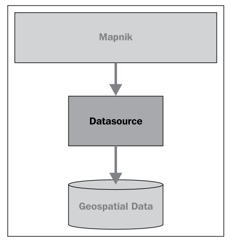通常，你会使用这里描述的便捷构造函数来创建数据源。然后，你将这个数据源添加到任何 Mapnik 图层对象中，这些图层会使用该数据源：
layer.datasource = datasource
一个 Datasource 对象可以被多个图层共享，或者只被一个图层使用。
Mapnik 支持多种不同类型的数据源，其中一些是实验性的，或者可以访问商业数据库中的数据。接下来，我们将更详细地了解你可能会觉得有用的数据源类型。
Before you can access a given set of geospatial data within a map, you need to set up a Mapnik Datasource object. This acts as a “bridge” between Mapnik and your geospatial data:
You typically create the data source using one of the convenience constructors described here. Then you add that data source to any Mapnik Layer objects, which will use that data:
layer.datasource = datasource
A single Datasource object can be shared by multiple layers, or it can be used by just one layer.
There are many different types of data sources supported by Mapnik, some of which are experimental or access data in commercial databases. Let’s take a closer look at the types of data sources you are likely to find useful.
Shapefile#
Shapefile
使用 shapefile 作为 Mapnik 数据源非常简单。你需要做的就是将所需 shapefile 的名称和目录路径传递给 mapnik.Shapefile() 便捷构造函数：
import mapnik
...
datasource = mapnik.Shapefile(file="shapefile.shp")
如果 shapefile 位于不同的目录中，可以使用 os.path.join() 来定义完整的路径。例如，你可以像这样打开相对于 Python 程序的目录中的 shapefile：
datasource = mapnik.Shapefile(file=os.path.join("..", "data",
"shapes.shp"))
当你打开一个 shapefile 数据源时，可以在过滤器表达式中使用 shapefile 的属性，并作为字段通过 TextSymbolizer 来显示。默认情况下，shapefile 中的所有文本都会被假定为 UTF-8 字符编码；如果你需要使用不同的字符编码，可以使用 encoding 参数，如下所示：
datasource = mapnik.Shapefile(file="shapefile.shp",
encoding="latin1")
It is easy to use a shapefile as a Mapnik data source. All you need to do is supply the name and directory path for the desired shapefile to the mapnik.Shapefile() convenience constructor:
import mapnik
...
datasource = mapnik.Shapefile(file="shapefile.shp")
If the shapefile is in a different directory, you can use os.path.join() to define the full path. For example, you can open a shapefile in a directory relative to your Python program like this:
datasource = mapnik.Shapefile(file=os.path.join("..", "data",
"shapes.shp"))
When you open a shapefile data source, the shapefile’s attributes can be used within a filter expression, and as fields to be displayed by a TextSymbolizer. By default, all text within the shapefile will be assumed to be in UTF-8 character encoding; if you need to use a different character encoding, you can use the encoding parameter, as follows:
datasource = mapnik.Shapefile(file="shapefile.shp",
encoding="latin1")
PostGIS#
PostGIS
这个数据源允许你在地图中使用 PostGIS 数据库中的数据。PostGIS 数据源的基本用法如下：
import mapnik
...
datasource = mapnik.PostGIS(user="..." password="...",
dbname="...", table="...")
你只需要传递用于访问 PostGIS 数据库的用户名和密码、数据库的名称，以及包含你想在地图上显示的空间数据的表名。与 shapefile 一样，数据库表中的字段可以在过滤器表达式中使用，也可以作为字段通过 TextSymbolizer 来显示。
在从 PostGIS 数据库检索数据时，有一些性能问题需要注意。假设我们正在访问一个大型数据库表，并使用以下方式来生成地图的图层：
datasource = mapnik.PostGIS(user="...", password="...",
dbname="...", table="myBigTable")
layer = mapnik.Layer("myLayer")
layer.datasource = datasource
layer.styles.append("myLayerStyle")
symbol = mapnik.PolygonSymbolizer(mapnik.Color("#406080"))
rule = mapnik.Rule()
rule.filter = mapnik.Filter("[level] = 1")
rule.symbols.append(symbol)
style = mapnik.Style()
style.rules.append(rule)
map.append_style("myLayerStyle", style)
注意，数据源引用了 PostGIS 数据库中的 myBigTable 表，并使用过滤器表达式 ([level] = 1) 选择该数据库表中需要显示的特定记录，以通过 PolygonSymbolizer 绘制。
在渲染这个地图图层时，Mapnik 将扫描表中的每一条记录，依次将过滤器表达式应用于每条记录，然后仅在记录匹配过滤器表达式时，使用 PolygonSymbolizer 来绘制该记录的多边形。如果表中记录不多，或者大部分记录都符合过滤条件，这种做法是可以的。但假设 myBigTable 表包含一百万条记录，而其中只有 10,000 条记录的 level 值为 1。在这种情况下，Mapnik 将扫描整个表并丢弃 99% 的记录，只有剩下的 1% 记录会被绘制出来。
正如你能想象的那样，这样的做法非常低效。Mapnik 会浪费大量时间在数据库中过滤记录，而实际上 PostGIS 本身更适合完成这一任务。在这种情况下，你可以使用 子选择查询，这样数据库本身会在数据被 Mapnik 接收之前进行过滤。我们在前一章中实际上使用了一个子选择查询，从 PostGIS 数据库中检索了瓦片状的海岸线数据，尽管我们并没有深入解释其工作原理。
要使用子选择查询，你可以用一个 SQL 的 select 语句来替换表名，该语句执行过滤并返回 Mapnik 生成地图图层所需的字段。下面是一个使用子选择查询的更新版本：
query = "(select geom from myBigTable where level=1) as data"
datasource = mapnik.PostGIS(user="...", password="...",
dbname="...", table=query)
layer = mapnik.Layer("myLayer")
layer.datasource = datasource
layer.styles.append("myLayerStyle")
symbol = mapnik.PolygonSymbolizer(mapnik.Color("#406080"))
rule = mapnik.Rule()
rule.symbols.append(symbol)
style = mapnik.Style()
style.rules.append(rule)
map.append_style("myLayerStyle", style)
我们用一个 PostGIS 子选择语句替换了表名，该语句过滤掉了所有 level 值不等于 1 的记录，并将匹配记录的 geom 字段返回给 Mapnik。我们还删除了代码中的 rule.filter = 行，因为数据源只会返回已经匹配过滤器表达式的记录。
备注
请注意，子选择语句以 … as data 结尾。我们必须给子选择语句的结果命名，尽管这个名称会被忽略。在这个例子中，我们将结果命名为 data，但你可以使用任何你喜欢的名称。
如果你使用子选择查询，重要的是你要包括所有在过滤器表达式和符号化器中使用的字段。如果你没有在子选择语句中包括某个字段，那么该字段将无法供 Mapnik 使用。
This data source allows you to use data from a PostGIS database on your map. The basic usage of the PostGIS data source is like this:
import mapnik
...
datasource = mapnik.PostGIS(user="..." password="...",
dbname="...", table="...")
You simply pass in the username and password used to access the PostGIS database, the name of the database, and the name of the table that contains the spatial data you want to include on your map. As with the shapefiles, the fields in the database table can be used inside a filter expression, and fields to be displayed using a TextSymbolizer.
There are some performance issues to be aware of when retrieving data from a PostGIS database. Imagine that we’re accessing a large database table, and use the following to generate our map’s layer:
datasource = mapnik.PostGIS(user="...", password="...",
dbname="...", table="myBigTable")
layer = mapnik.Layer("myLayer")
layer.datasource = datasource
layer.styles.append("myLayerStyle")
symbol = mapnik.PolygonSymbolizer(mapnik.Color("#406080"))
rule = mapnik.Rule()
rule.filter = mapnik.Filter("[level] = 1")
rule.symbols.append(symbol)
style = mapnik.Style()
style.rules.append(rule)
map.append_style("myLayerStyle", style)
Note how the data source refers to the myBigTable table within the PostGIS database, and we use a filter expression ([level] = 1) to select the particular records within that database table to be displayed using our PolygonSymbolizer.
When rendering this map layer, Mapnik will scan through every record in the table, apply the filter expression to each record in turn, and then use the PolygonSymbolizer to draw the record’s polygon if and only if the record matches the filter expression. This is fine if there aren’t many records in the table, or if most of the records will match the filter expression. But imagine that the myBigTable table contains a million records, with only 10,000 records having a level value of 1. In this case, Mapnik will scan through the entire table and discard 99 percent of the records. Only the remaining 1 percent will actually be drawn.
As you can imagine, this is extremely inefficient. Mapnik will waste a lot of time filtering the records in the database when PostGIS itself is much better suited to the task. In situations like this, you can make use of a subselect query so that the database itself will do the filtering before the data is received by Mapnik. We actually used a subselect query in the previous chapter, where we retrieved tiled shoreline data from our PostGIS database, though we didn’t explain how it worked in any depth.
To use a subselect query, you replace the table name with an SQL select statement that does the filtering and returns the fields needed by Mapnik to generate the map’s layer. Here is an updated version of the preceding example that uses a subselect query:
query = "(select geom from myBigTable where level=1) as data"
datasource = mapnik.PostGIS(user="...", password="...",
dbname="...", table=query)
layer = mapnik.Layer("myLayer")
layer.datasource = datasource
layer.styles.append("myLayerStyle")
symbol = mapnik.PolygonSymbolizer(mapnik.Color("#406080"))
rule = mapnik.Rule()
rule.symbols.append(symbol)
style = mapnik.Style()
style.rules.append(rule)
map.append_style("myLayerStyle", style)
We’ve replaced the table name with a PostGIS subselect statement that filters out all records with a level value not equal to 1 and returns just the geom field for the matching records back to Mapnik. We’ve also removed the rule.filter = line in our code, as the data source will only ever return records that already match the filter expression.
备注
Note that the subselect statement ends with …as data. We have to give the results of the subselect statement a name, even though that name is ignored. In this case, we’ve called the results data, though you can use any name you like.
If you use a subselect, it is important that you include all the fields used by your filter expressions and symbolizers. If you don’t include a field in the subselect statement, it won’t be available for Mapnik to use.
Gdal#
Gdal
Gdal 数据源允许你在地图中包含任何 GDAL 兼容的栅格图像数据文件。使用 Gdal 数据源非常简单：
datasource = mapnik.Gdal(file="myRasterImage.tiff")
一旦你有了一个 Gdal 数据源，你需要使用 RasterSymbolizer 将其绘制到地图上：
layer = mapnik.Layer("myLayer")
layer.datasource = datasource
layer.styles.append("myLayerStyle")
symbol = mapnik.RasterSymbolizer()
rule = mapnik.Rule()
rule.symbols.append(symbol)
style = mapnik.Style()
style.rules.append(rule)
map.append_style("myLayerStyle", style)
备注
Mapnik 提供了另一种读取 TIFF 格式栅格图像的方式，使用 Raster 数据源。一般来说，使用 Gdal 数据源比使用 Raster 数据源更灵活、更简便。
The Gdal data source allows you to include any GDAL-compatible raster image data file within your map. The Gdal data source is straightforward to use:
datasource = mapnik.Gdal(file="myRasterImage.tiff")
Once you have a Gdal data source, you need to use a RasterSymbolizer to draw it onto the map:
layer = mapnik.Layer("myLayer")
layer.datasource = datasource
layer.styles.append("myLayerStyle")
symbol = mapnik.RasterSymbolizer()
rule = mapnik.Rule()
rule.symbols.append(symbol)
style = mapnik.Style()
style.rules.append(rule)
map.append_style("myLayerStyle", style)
备注
Mapnik provides another way of reading TIFF-format raster images, using the Raster data source. In general, using the Gdal data source is more flexible and easier than using Raster.
Ogr#
Ogr
Ogr 数据源允许你在地图上显示任何 OGR 兼容的矢量数据。Ogr 数据源的便利构造函数至少需要两个命名参数：
datasource = mapnik.Ogr(file="...", layer="...")
file 参数是 OGR 兼容数据文件的名称，而 layer 是该数据文件中所需图层的名称。例如，你可以使用它通过 OGR 驱动读取 shapefile：
datasource = mapnik.Ogr(file="shapefile.shp",
layer="shapefile")
更有用的是，你可以使用它从 OGR 支持的任何矢量格式数据文件中加载数据。各种支持的格式可以在以下网页中找到：
http://www.gdal.org/ogr/ogr_formats.html
虚拟数据源（VRT） 格式对我们来说尤其重要。VRT 格式是一个 XML 格式的文件，它允许你设置一个 OGR 数据源，而这个数据源并不是存储在磁盘上的简单文件中。我们在前一章中看到了如何使用它在地图上显示来自 MySQL 数据库的数据，尽管 Mapnik 本身并不实现 MySQL 数据源。
VRT 文件格式相对复杂，但在 OGR 网站上有详细解释。以下是如何使用 VRT 文件设置 MySQL 虚拟数据源的示例：
<OGRVRTDataSource>
<OGRVRTLayer name="myLayer">
<SrcDataSource>MYSQL:mydb,user=user,password=pass,
tables=myTable</SrcDataSource>
<SrcSQL>
SELECT name,geom FROM myTable
</SrcSQL>
</OGRVRTLayer>
</OGRVRTDataSource>
<SrcDataSource> 元素包含一个字符串，用于设置 OGR MySQL 数据源。这个字符串的格式如下：
MySQL:«dbName»,user=«username»,password=«pass»,tables=«tables»
你需要将 «dbName» 替换为你的数据库名称，将 «username» 和 «pass» 替换为用于访问 MySQL 数据库的用户名和密码，将 «tables» 替换为你想从中检索数据的数据库表的列表。如果你从多个表中检索数据，你需要使用分号分隔表名，如下所示：
tables=lakes;rivers;coastlines
注意，<SrcDataSource> 和 </SrcDataSource> 之间的所有文本必须写在同一行。
<SrcSQL> 元素中的文本应该是一个 MySQL 查询语句，用于从数据库表中检索所需的信息。和 PostGIS 数据源一样，你可以使用它在数据传递到 Mapnik 之前筛选掉不需要的记录，这将显著提高性能。
VRT 文件应该保存到磁盘上。例如，上面的虚拟文件定义可能会保存为名为 myLayer.vrt 的文件。然后，你可以使用这个文件来定义你的 Ogr 数据源，如下所示：
datasource = mapnik.Ogr(file="myLayer.vrt", layer="myLayer")
The Ogr data source lets you display any OGR-compatible vector data on your map. The convenience constructor for an Ogr data source requires at least two named parameters:
datasource = mapnik.Ogr(file="...", layer="...")
The file parameter is the name of an OGR-compatible data file, while layer is the name of the desired layer within that data file. You could use this, for example, to read a shapefile via the OGR driver:
- datasource = mapnik.Ogr(file=”shapefile.shp”,
layer=”shapefile”)
More usefully, you can use this to load data from any vector-format data file supported by OGR. The various supported formats are listed on the following web page:
http://www.gdal.org/ogr/ogr_formats.html
The Virtual Datasource (VRT) format is of particular interest to us. The VRT format is an XML-formatted file that allows you to set up an OGR data source, which isn’t stored in a simple file on disk. We saw in the previous chapter how this can be used to display data from a MySQL database on a map, despite the fact that Mapnik itself does not implement a MySQL data source.
The VRT file format is relatively complex, though it is explained fully on the OGR website. Here is an example of how you can use a VRT file to set up a MySQL virtual data source:
<OGRVRTDataSource>
<OGRVRTLayer name="myLayer">
<SrcDataSource>MYSQL:mydb,user=user,password=pass,
tables=myTable</SrcDataSource>
<SrcSQL>
SELECT name,geom FROM myTable
</SrcSQL>
</OGRVRTLayer>
</OGRVRTDataSource>
The <SrcDataSource> element contains a string that sets up the OGR MySQL data source. This string is of the following format:
MySQL:«dbName»,user=«username»,password=«pass»,tables=«tables»
You need to replace «dbName» with the name of your database, «username» and «pass» with the username and password used to access your MySQL database, and «tables» with a list of the database tables you want to retrieve your data from. If you are retrieving data from multiple tables, you need to separate the table names with a semicolon like this:
tables=lakes;rivers;coastlines
Note that all the text between <SrcDataSource> and </SrcDataSource> must be on a single line.
The text inside the <SrcSQL> element should be a MySQL select statement that retrieves the desired information from the database table(s). As with the PostGIS data source, you can use this to filter out unwanted records before they are passed to Mapnik, which will significantly improve performance.
The VRT file should be saved to disk. For example, the preceding virtual file definition might be saved to a file named myLayer.vrt. You would then use this file to define your Ogr data source like this:
datasource = mapnik.Ogr(file="myLayer.vrt", layer="myLayer")
SQLite#
SQLite
SQLite 数据源允许你在地图上包含来自 SQLite（或 SpatiaLite）数据库的数据。mapnik.SQLite() 便利构造函数接受多个关键字参数；最常用的参数包括：
- file=”…”
SQLite 数据库文件的名称和可选路径。
- table=”…”
数据库中所需表的名称。
- geometry_field=”…”
表中存储要显示的几何形状的字段名称。
- key_field=”…”
表中主键字段的名称。
例如，要访问名为 mapData.db 的 SpatiaLite 数据库中的名为 countries 的表，你可以使用以下代码：
datasource = mapnik.SQLite(file="mapData.db",
table="countries",
geometry_field="outline",
key_field="id")
countries 表中的所有字段都可以在 Mapnik 筛选器中使用，并且可以通过 TextSymbolizer 显示。各种符号化工具将使用 outline 字段中存储的几何数据来绘制线条、多边形等。
The SQLite data source allows you to include data from an SQLite (or SpatiaLite) database on a map. The mapnik.SQLite() convenience constructor accepts a number of keyword parameters; the ones most likely to be useful are:
- file=”…”
The name and optional path to the SQLite database file.
- table=”…”
The name of the desired table within this database.
- geometry_field=”…”
The name of a field within this table that holds the geometry to be displayed.
- key_field=”…”
The name of the primary key field within the table.
For example, to access a table named countries in a SpatiaLite database named mapData.db, you might use the following:
datasource = mapnik.SQLite(file="mapData.db",
table="countries",
geometry_field="outline",
key_field="id")
All of the fields within the countries table will be available for use in Mapnik filters and for display using a TextSymbolizer. The various symbolizers will use the geometry stored in the outline field for drawing lines, polygons, and so on.
OSM#
OSM
OSM 数据源允许你将 OpenStreetMap 数据包含到地图中。OpenStreetMap 数据存储在 .osm 格式中，这是一个包含 OpenStreetMap 使用的基本节点、路径和关系的 XML 格式。OpenStreetMap 数据格式以及下载 .osm 文件的选项可以在以下网址找到：
http://wiki.openstreetmap.org/wiki/.osm
如果你已经下载了一个 .osm 文件并想要在本地访问它，可以像这样设置数据源：
datasource = mapnik.OSM(file="myData.osm")
如果你希望使用 OpenStreetMap API 调用来动态检索 OSM 数据，可以通过提供一个 URL 来读取数据，同时提供一个边界框（bounding box）来确定你想要下载的数据集。例如：
osmURL = "http://api.openstreetmap.org/api/0.6/map"
bounds = "176.193,-38.172,176.276,-38.108"
datasource = mapnik.OSM(url=osmURL, bbox=bounds)
边界框是一个包含左、下、右、上四个坐标的字符串，分别表示所需边界框的坐标。
The OSM data source allows you to include OpenStreetMap data onto a map. The OpenStreetMap data is stored in .osm format, which is an XML format containing the underlying nodes, ways and relations used by OpenStreetMap. The OpenStreetMap data format, and options for downloading .osm files, can be found at:
http://wiki.openstreetmap.org/wiki/.osm
If you have downloaded a .osm file and want to access it locally, you can set up your data source like this:
datasource = mapnik.OSM(file="myData.osm")
If you wish to use an OpenStreetMap API call to retrieve the OSM data on the fly, you can do this by supplying a URL to read the data from, along with a bounding box to identify which set of data you want to download. For example:
osmURL = "http://api.openstreetmap.org/api/0.6/map"
bounds = "176.193,-38.172,176.276,-38.108"
datasource = mapnik.OSM(url=osmURL, bbox=bounds)
The bounding box is a string containing the left, bottom, right, and top coordinates for the desired bounding box, respectively.
MemoryDatasource#
MemoryDatasource
MemoryDatasource 允许你手动定义出现在地图上的地理空间数据。要使用 MemoryDatasource，你首先需要创建一个 mapnik.Context 对象，定义你希望与每个要素关联的属性：
context = mapnik.Context()
context.push("NAME")
context.push("ELEVATION")
然后，你为每个要包含在地图中的要素创建一个 mapnik.Feature 对象，如下所示：
feature = mapnik.Feature(context, id)
在前面的 feature 中，id 是该要素的唯一整数 ID 值。
一旦要素被创建，你可以像操作 Python 字典一样定义该要素的属性：
feature['NAME'] = "Hawkins Hill"
feature['ELEVATION'] = 1624
这些属性可以被规则用于选择显示哪些要素，也可以被 TextSymbolizer 用来在地图上绘制属性的值。
每个要素可以有一个或多个几何形状与之关联。设置要素几何形状的最简单方法是使用 add_geometries_from_wkt() 方法，如下所示：
feature.add_geometries_from_wkt("POINT (174.73 -41.33)")
最后，你可以使用 add_feature() 方法将该要素添加到 MemoryDatasource：
datasource = mapnik.MemoryDatasource()
datasource.add_feature(feature)
The MemoryDatasource allows you to manually define the geospatial data, which appears on the map. To use a MemoryDatasource, you first create a mapnik.Context object that defines the attributes you want to associate with each feature:
context = mapnik.Context()
context.push("NAME")
context.push("ELEVATION")
You then create a mapnik.Feature object for each of the features you want to include on the map, like this:
feature = mapnik.Feature(context, id)
In the preceding feature, id is a unique integer ID value for this feature.
Once the feature has been created, you can define the feature’s attributes as if it was a Python dictionary:
feature['NAME'] = "Hawkins Hill"
feature['ELEVATION'] = 1624
These attributes can be used by rules to select which features to display, and they can also be used by a TextSymbolizer to draw an attribute’s value onto the map.
Each feature can have one or more geometries associated with it. The easiest way to set the feature’s geometry is to use the add_geometries_from_wkt() method, like this:
feature.add_geometries_from_wkt("POINT (174.73 -41.33)")
Finally, you can add the feature to the MemoryDatasource using the add_feature() method:
datasource = mapnik.MemoryDatasource()
datasource.add_feature(feature)
规则、过滤器和样式#
Rules, filters, and styles
正如我们在本章之前所看到的，Mapnik 使用 规则 来指定用于渲染特定要素的符号化器。规则被组织到一个 样式 中，多个样式会添加到地图中，然后通过名称在设置图层时进行引用。在本节中，我们将深入探讨规则、过滤器和样式之间的关系，看看这些 Mapnik 类到底能做些什么。
让我们更详细地了解一下 Mapnik 的 Rule 类。一个 Mapnik 规则有两个部分：一组条件和一组符号化器。如果规则的条件满足，则会使用这些符号化器将匹配的要素绘制到地图上。
规则支持四种类型的条件：
过滤器 （filter）：Mapnik 过滤器 可以用来指定必须满足的表达式，只有满足该条件的要素才会被绘制。
比例尺分母 （scale denominators）：规则本身可以指定必须应用的最小和最大比例尺分母。可以用来设置规则，仅在地图以特定比例尺绘制时使用。
else 条件：规则可以有一个 else 条件，这意味着只有当样式中的其他规则没有满足其条件时，这个规则才会被应用。
also 条件：规则可以有一个 also 条件，这意味着只有当样式中至少有一个其他规则满足其条件时，这个规则才会被应用。
如果规则的所有条件都满足，则会使用与该规则相关联的符号化器列表将要素渲染到地图上。
接下来，我们将更详细地看一下这些条件。
As we saw earlier in this chapter, Mapnik uses rules to specify which particular symbolizers will be used to render a given feature. Rules are grouped together into a style, and the various styles are added to your map and then referred to by name when you set up your layer. In this section, we will examine the relationship between rules, filters and styles, and see just what can be done with these various Mapnik classes.
Let’s take a closer look at Mapnik’s Rule class. A Mapnik rule has two parts: a set of conditions, and a list of symbolizers. If the rule’s conditions are met, then the symbolizers will be used to draw the matching features onto the map.
There are four types of conditions supported by a rule:
A mapnik filter can be used to specify an expression that must be met by the feature if it is to be drawn.
The rule itself can specify minimum and maximum scale denominators which must apply. This can be used to set up rules that are only used if the map is drawn at a given scale.
The rule can have an else condition, which means that the rule will only be applied if no other rule in the style has had its conditions met.
The rule can have an also condition, which means that the rule will only be applied if at least one other rule in the style has had its conditions met.
If all the conditions for a rule are met, then the associated list of symbolizers will be used to render the feature onto the map.
Let’s take a look at these conditions in more detail.
过滤器#
Filters
Mapnik 的 Filter() 构造函数接受一个参数，这是一个字符串，定义了一个表达式，只有在要素满足该表达式时，规则才会应用。然后，你将返回的 Filter 对象存储到规则的 filter 属性中:
rule.filter = mapnik.Filter("...")
让我们考虑一个非常简单的过滤器表达式，它将字段或属性与特定值进行比较:
filter = mapnik.Filter("[level] = 1")
字符串值可以通过在值周围加上单引号来进行比较，如下所示:
filter = mapnik.Filter("[type] = 'CITY'")
注意，字段名称和值都是区分大小写的，并且你必须使用方括号包围字段或属性名称。
当然，仅仅将字段与值进行比较是你可以进行的最基本的比较类型。过滤器表达式具有强大且灵活的语法，用于定义条件，类似于 SQL 的 WHERE 表达式。以下语法图描述了编写过滤器表达式字符串的所有选项：
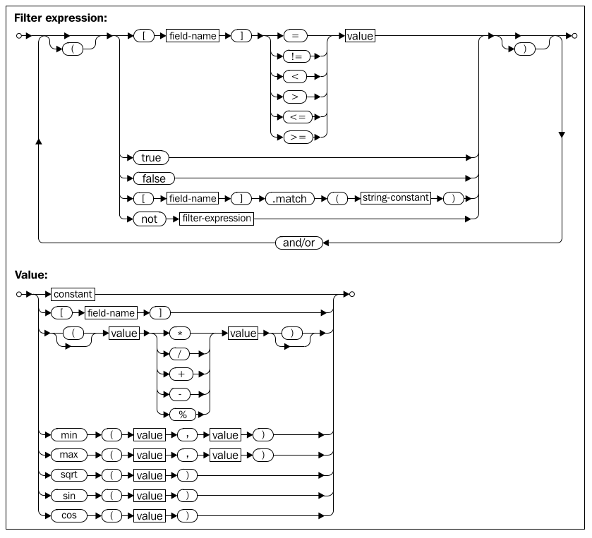Mapnik 还允许你根据几何体的类型进行过滤，使用特殊的语法:
filter = mapnik.Filter("[mapnik::geometry_type] = point")
以下几何体类型是该过滤器表达式所支持的：
point
linestring
polygon
collection
Mapnik’s Filter() constructor takes a single parameter, a string defining an expression which the feature must match if the rule is to apply. You then store the returned Filter object into the rule’s filter attribute:
rule.filter = mapnik.Filter("...")
Let’s consider a very simple filter expression, comparing a field or attribute against a specific value:
filter = mapnik.Filter("[level] = 1")
String values can be compared by putting single quote marks around the value, like this:
filter = mapnik.Filter("[type] = 'CITY'")
Note that the field name and value are both case-sensitive, and that you must surround the field or attribute name with square brackets.
Of course, simply comparing a field with a value is the most basic type of comparison you can do. Filter expressions have their own powerful and flexible syntax for defining conditions, similar in concept to an SQL where expression. The following syntax diagram describes all the options for writing filter expression strings:
Mapnik also allows you to filter on the type of geometry, using a special syntax:
filter = mapnik.Filter("[mapnik::geometry_type] = point")
The following geometry types are supported by this filter expression:
point
linestring
polygon
collection
比例分母#
Scale denominators
考虑以下两张地图：
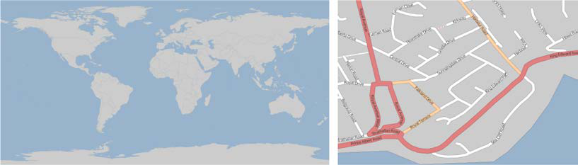显然，在整个世界的地图上绘制街道是没有意义的。同样，世界地图上显示的国家轮廓的比例太大，以至于无法为单个城市绘制详细的海岸线。但是，如果您的应用程序允许用户从世界地图缩放到单个街道，您将需要使用一套 Mapnik 样式来生成地图，无论您绘制的比例是多少。
Mapnik 允许您通过根据地图的比例分母有选择性地显示要素来实现这一点。如果您有一张以 1:100,000 比例打印的纸质地图，那么比例分母就是冒号后的数字（在本例中是 100,000）。数字化绘制地图使得这一点变得更加复杂，但其基本思想保持不变。
Mapnik 规则可以关联最小和最大比例分母值:
rule.min_scale = 10000
rule.max_scale = 100000
如果设置了最小和最大比例分母，则规则只会在地图的比例分母在此范围内时应用。
您还可以对整个图层应用最小和最大缩放因子:
layer.minzoom = 1.0/100000
layer.maxzoom = 1.0/200000
备注
请注意，规则使用比例分母，而图层使用缩放因子。这可能会有些混淆，因为两者之间的关系并不直接。有关缩放因子和比例分母的更多信息，请参见 http://trac.mapnik.org/wiki/ScaleAndPpi。
只有当地图当前的缩放因子在此范围内时，整个图层才会显示。这在您有一个数据源只应在显示地图的某个特定比例时使用时非常有用，例如，仅在用户缩放时使用高分辨率的海岸线数据。
比例分母可以直观地使用，例如，比例分母值为 200,000 表示地图大约是 1:200,000 的比例。但这只是一个近似值；实际计算比例分母时必须考虑两个重要因素：
因为 Mapnik 将地图渲染为位图图像，所以图像中每个像素的大小也会起作用。由于位图图像可以显示在不同分辨率的计算机屏幕上，Mapnik 使用由开放地理空间联盟定义的“标准化渲染像素大小”来定义像素的大小。该值为 0.28 毫米，约等于现代视频显示器上像素的大小。
使用的地图投影可能对计算出的比例分母产生巨大影响。地图投影总是会扭曲真实的距离，一个在赤道准确的投影可能在靠近极地时极其不准确。
根据使用的投影不同，Mapnik 用来计算比例分母的公式可能变得相当复杂。与其担心公式，不如直接让 Mapnik 为我们计算比例分母和缩放因子:
map = mapnik.Map(width, height, projection)
map.zoom_to_box(bounds)
print map.scale_denominator(), map.scale()
然后，您可以将地图缩放到所需的比例，并查看缩放因子和分母，然后将其插入到样式中，选择在给定的比例分母范围内应显示哪些要素。
备注
如果您在使用多个投影时，请小心。适用于某个投影的比例分母在切换投影时可能需要进行调整。
Consider the following two maps:
Obviously, there’s no point in drawing streets onto a map of the entire world. Similarly, the country outlines shown on the world map are at too large a scale to draw detailed coastlines for an individual city. But if your application allows the user to zoom in from the world map right down to an individual street, you will need to use a single set of Mapnik styles to generate the map regardless of the scale at which you are drawing it.
Mapnik allows you to do this by selectively displaying features based on the map’s scale denominator. If you had a map printed on paper at 1:100,000 scale, then the scale denominator would be the number after the colon (100,000 in this case). Drawing maps digitally makes this a bit more complicated, but the idea remains the same.
A Mapnik rule can have a minimum and maximum scale denominator value associated with it:
rule.min_scale = 10000
rule.max_scale = 100000
If the minimum and maximum scale denominators are set, then the rule will only apply if the map’s scale denominator is within this range.
You can also apply minimum and maximum scale factors to an entire layer:
layer.minzoom = 1.0/100000
layer.maxzoom = 1.0/200000
备注
Note that rules use scale denominators while layers use scale factors. This can be rather confusing, as the relationship between the two is not straightforward. For more information on scale factors and scale denominators, please refer to http://trac.mapnik.org/wiki/ ScaleAndPpi.
The whole layer will only be displayed when the map’s current scale factor is within this range. This is useful if you have a data source that should only be used when displaying the map at a certain scale—for example, only using high-resolution shoreline data when the user has zoomed in.
Scale denominators can be used intuitively, for example a scale denominator value of 200,000 represents a map drawn at roughly 1:200,000 scale. But this is only an approximation; the actual calculation of a scale denominator has to take into account two important factors:
Because Mapnik renders a map as a bitmapped image, the size of the individual pixels within the image comes into play. Since bitmapped images can be displayed on a variety of different computer screens with different pixel sizes, Mapnik uses a “standardized rendering pixel size” as defined by the Open Geospatial Consortium to define how big a pixel is going to be. This value is 0.28 mm, and is approximately the size of a pixel on modern video displays.
The map projection being used can have a huge effect on the calculated scale denominator. Map projections always distort true distances, and a projection which is accurate at the equator may be wildly inaccurate closer to the poles.
Depending on the projection being used, the formula Mapnik uses to calculate the scale denominator can get rather complicated. Rather than worrying about the formulas, it is much easier just to ask Mapnik to calculate the scale denominator and scale factor for us:
map = mapnik.Map(width, height, projection)
map.zoom_to_box(bounds)
print map.scale_denominator(), map.scale()
You can then zoom the map to your desired scale and see what the scale factor and denominator are, which you can then plug into your styles to choose which features should be displayed at a given scale denominator range.
备注
Be careful if you are working with multiple projections. A scale denominator that works for one projection may need to be adjusted if you switch projections.
“Else”规则#
“Else” rules
假设您想要将一些要素绘制成一种颜色，而所有其他要素绘制成另一种颜色。实现这一目标的一种方式是使用 Mapnik 规则，像这样:
rule1.filter = mapnik.Filter("[level] = 1")
...
rule2.filter = mapnik.Filter("[level] != 1")
对于简单的筛选表达式，这样的方法是有效的，但当表达式变得更加复杂时，使用 “else” 规则会更加方便，像这样:
rule1.filter = mapnik.Filter("[level] = 1")
...
rule2.set_else(True)
如果您对一个规则调用 set_else(True)，那么这个规则将在只有当同一样式中没有任何先前规则满足其筛选条件时才会被应用。
“Else” 规则特别有用，尤其是在您有多个筛选条件，并且希望在没有其他规则被使用来绘制要素时，拥有一个“捕获所有”规则。例如:
rule1.filter = mapnik.Filter("[type] = 'city'")
rule2.filter = mapnik.Filter("[type] = 'town'")
rule3.filter = mapnik.Filter("[type] = 'village'")
rule4.filter.set_else(True)
Imagine that you want to draw some features in one color, and all other features in a different color. One way to achieve this is by using Mapnik rules, like this:
rule1.filter = mapnik.Filter("[level] = 1")
...
rule2.filter = mapnik.Filter("[level] != 1")
This is fine for simple filter expressions, but when the expressions get more complicated it is a lot easier to use an “else” rule, like this:
rule1.filter = mapnik.Filter("[level] = 1")
...
rule2.set_else(True)
If you call set_else(True) for a rule, then this rule is to be used if and only if no previous rule in the same style has had its filter conditions met.
Else rules are particularly useful if you have a number of filter conditions and want to have a “catch-all” rule at the end, which will apply if no other rule has been used to draw the feature. For example:
rule1.filter = mapnik.Filter("[type] = 'city'")
rule2.filter = mapnik.Filter("[type] = 'town'")
rule3.filter = mapnik.Filter("[type] = 'village'")
rule4.filter.set_else(True)
“Also”规则#
“Also” rules
假设您已经定义了一系列规则，用不同的颜色绘制国家多边形，取决于联合国区域代码:
rule1 = mapnik.Rule()
rule1.filter = mapnik.Filter("[region] = '002'") # 非洲
rule1.symbols.append(mapnik.PolygonSymbolizer(color1))
rule2 = mapnik.Rule()
rule2.filter = mapnik.Filter("[region] = '019'") # 美洲
rule2.symbols.append(mapnik.PolygonSymbolizer(color2))
rule3 = mapnik.Rule()
rule3.filter = mapnik.Filter("[region] = '142'") # 亚洲
rule3.symbols.append(mapnik.PolygonSymbolizer(color3))
rule4 = mapnik.Rule()
rule4.filter = mapnik.Filter("[region] = '150'") # 欧洲
rule4.symbols.append(mapnik.PolygonSymbolizer(color3))
rule5 = mapnik.Rule()
rule5.filter = mapnik.Filter("[region] = '009'") # 大洋洲
rule5.symbols.append(mapnik.PolygonSymbolizer(color3))
在填充这些多边形之后，您现在想要在多边形的边界画上一条黑色的线。您可以通过两种方式来实现：要么为您的五个规则中的每一个添加一个 LineSymbolizer，要么使用一个 also 规则。
Also 规则基本上是 else 规则的反面： also 规则仅在至少一个其他规则适用于该要素时才会应用。
这是如何使用 also 规则在所有填充的多边形周围画上边框的方法：
rule6 = mapnik.Rule() rule6.set_also(True) rule6.symbols.append(mapnik.LineSymbolizer(color6, 0.1))
如果任何其他规则应用于该要素，那么这个规则就会被应用——也就是说，它会在任何填充的多边形周围画上边框。但如果某个要素位于其他规则未覆盖的区域内，则不会画出边框。
Imagine that you’ve defined a series of rules to draw country polygons in different colors depending on the UN region code:
rule1 = mapnik.Rule()
rule1.filter = mapnik.Filter("[region] = '002") # Africa.
rule1.symbols.append(mapnik.PolygonSymbolizer(color1))
rule2 = mapnik.Rule()
rule2.filter = mapnik.Filter("[region] = '019'") # Americas.
rule1.symbols.append(mapnik.PolygonSymbolizer(color2))
rule3 = mapnik.Rule()
rule3.filter = mapnik.Filter("[region] = '142'") # Asia.
rule3.symbols.append(mapnik.PolygonSymbolizer(color3))
rule4 = mapnik.Rule()
rule4.filter = mapnik.Filter("[region] = '150'") # Europe.
rule4.symbols.append(mapnik.PolygonSymbolizer(color3))
rule5 = mapnik.Rule()
rule5.filter = mapnik.Filter("[region] = '009'") # Oceania.
rule5.symbols.append(mapnik.PolygonSymbolizer(color3))
Having filled these polygons, you now want to draw a black line around the polygon boundary. There are two ways you could do this: you could add a LineSymbolizer to each of your five rules, or you could use an also rule.
An also rule is basically the opposite of the else rule: the also rule only applies if at least one other rule applies to the feature.
Here is how you could use an also rule to draw a border around all the filled polygons:
rule6 = mapnik.Rule()
rule6.set_also(True)
rule6.symbols.append(mapnik.LineSymbolizer(color6, 0.1))
This rule would apply if any of the other rules applied to the feature—that is, it would draw a border around any polygon that gets filled in. But if any feature is in a region not covered by the other rules, no border will be drawn.
符号化器#
Symbolizers
符号器用于将特征绘制到地图上。在本节中，我们将了解如何使用各种类型的符号器绘制线条、多边形、标签、点和图像。
Symbolizers are used to draw features onto a map. In this section, we will look at how you can use various types of symbolizers to draw lines, polygons, labels, points, and images.
绘制线条#
Drawing lines
有两种 Mapnik 符号器可用于在地图上绘制线条：LineSymbolizer 和 LinePatternSymbolizer。让我们依次了解一下它们。
There are two Mapnik symbolizers that can be used to draw lines onto a map: LineSymbolizer and LinePatternSymbolizer. Let’s looks at each of these in turn.
线符号化器#
LineSymbolizer
LineSymbolizer 用于绘制线性特征和多边形的轮廓，如下图所示:
.. image:: ./img/328-0.png
- class:
with-border
- align:
center
LineSymbolizer 是 Mapnik 中最有用的符号之一。以下是用于绘制前面示例中虚线的 Python 代码:
stroke = mapnik.Stroke()
stroke.color = mapnik.Color("#008000")
stroke.width = 1.0
stroke.add_dash(5, 10)
symbolizer = mapnik.LineSymbolizer(stroke)
如您所见，LineSymbolizer 使用 Mapnik 的 Stroke 对象来定义线条的绘制方式。使用 LineSymbolizer 时，首先需要创建 Stroke 对象，并设置各种选项来定义线条的绘制方式。然后，创建 LineSymbolizer，并将 stroke 对象传递给 LineSymbolizer 的构造函数:
symbolizer = mapnik.LineSymbolizer(stroke)
接下来，我们将更详细地了解 Stroke 对象提供的各种线条绘制选项。
The LineSymbolizer draws linear features and traces around the outline of polygons, as shown in the following diagram:
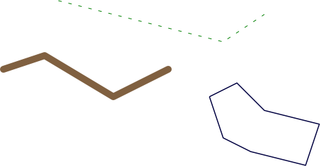The LineSymbolizer is one of the most useful of the Mapnik symbolizers. Here is the Python code that created the LineSymbolizer used to draw the dashed line in the preceding example:
stroke = mapnik.Stroke()
stroke.color = mapnik.Color("#008000")
stroke.width = 1.0
stroke.add_dash(5, 10)
symbolizer = mapnik.LineSymbolizer(stroke)
As you can see, the LineSymbolizer uses a Mapnik Stroke object to define how the line will be drawn. To use a LineSymbolizer, you first create the Stroke object and set the various options for how you want the line to be drawn. You then create your LineSymbolizer, passing the stroke object to the LineSymbolizer’s constructor:
symbolizer = mapnik.LineSymbolizer(stroke)
Let’s take a closer look at the various line-drawing options provided by the Stroke object.
Line color#
Line color
默认情况下，线条以黑色绘制。您可以通过将笔触的颜色属性设置为 Mapnik Color 对象来更改此设置:
stroke.color = mapnik.Color("red")
有关 Mapnik 颜色对象的更多信息以及指定颜色的各种方式，请参阅本章后面的使用颜色部分。
By default, lines are drawn in black. You can change this by setting the stroke’s color attribute to a Mapnik Color object:
stroke.color = mapnik.Color("red")
For more information about the Mapnik Color object, and the various ways in which you can specify a color, please refer to the Using Colors section later in this chapter.
Line width#
Line width
LineSymbolizer 绘制的线条默认宽度为 1 像素。要更改此设置，请将笔划的宽度属性设置为所需宽度（以像素为单位）:
stroke.width = 1.5
请注意，您可以使用分数线宽来细粒度控制线宽。
The line drawn by a LineSymbolizer will be one pixel wide by default. To change this, set the stroke’s width attribute to the desired width, in pixels:
stroke.width = 1.5
Note that you can use fractional line widths for fine-grained control of your line widths.
Opacity#
Opacity
您可以通过设置笔触的不透明度属性来更改线条的不透明度或透明度:
stroke.opacity = 0.8
不透明度的范围为 0.0（完全透明）至 1.0（完全不透明）。如果未指定不透明度，则线条将完全不透明。
You can change how opaque or transparent the line is by setting the stroke’s opacity attribute:
stroke.opacity = 0.8
The opacity can range from 0.0 (completely transparent) to 1.0 (completely opaque). If the opacity is not specified, the line will be completely opaque.
Line caps#
Line caps
线帽指定应如何绘制线的末端。Mapnik 支持三种标准线帽设置:
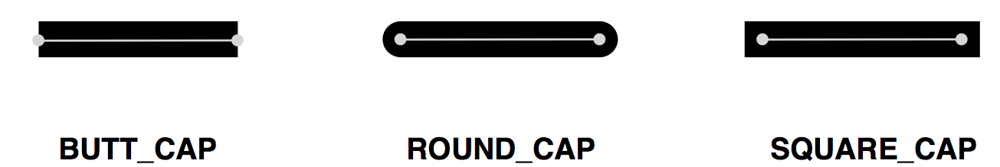默认情况下，线条将使用 BUTT_CAP 样式，但你可以通过设置笔触的 line_cap 属性来更改此样式，如下所示:
stroke1.line_cap = mapnik.line_cap.BUTT_CAP
stroke2.line_cap = mapnik.line_cap.ROUND_CAP
stroke3.line_cap = mapnik.line_cap.SQUARE_CAP
The line cap specifies how the ends of the line should be drawn. Mapnik supports three standard line cap settings:
By default, the lines will use BUTT_CAP style, but you can change this by setting the stroke’s line_cap attribute, like this:
stroke1.line_cap = mapnik.line_cap.BUTT_CAP
stroke2.line_cap = mapnik.line_cap.ROUND_CAP
stroke3.line_cap = mapnik.line_cap.SQUARE_CAP
Line joins#
Line joins
当一条线改变方向时，线的“角”可以用三种标准方式之一来画出:
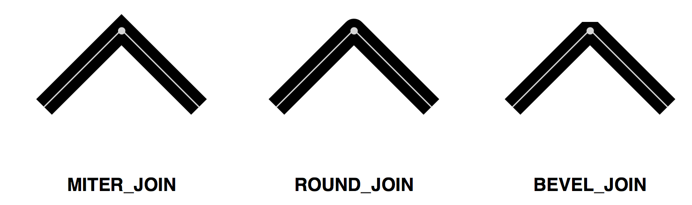默认行为是使用 MITER_JOIN，但您可以通过将笔划的 line_join 属性设置为其他值来更改此行为:
stroke1.line_join = mapnik.line_join.MITER_JOIN
stroke2.line_join = mapnik.line_join.ROUND_JOIN
stroke3.line_join = mapnik.line_join.BEVEL_JOIN
When a line changes direction, the “corner” of the line can be drawn in one of three standard ways:
The default behavior is to use MITER_JOIN, but you can change this by setting the stroke’s line_join attribute to a different value:
stroke1.line_join = mapnik.line_join.MITER_JOIN
stroke2.line_join = mapnik.line_join.ROUND_JOIN
stroke3.line_join = mapnik.line_join.BEVEL_JOIN
Dashed and dotted lines#
Dashed and dotted lines
你可以通过给线条添加“断点”来使其看起来像虚线或点线。为此，你需要给 Stroke 添加一个或多个 dash segments。每个 dash segment 定义了 短划线长度 和 间隔长度；线条会按照指定的短划线长度绘制，然后会留出指定长度的间隔，接着继续绘制线条：
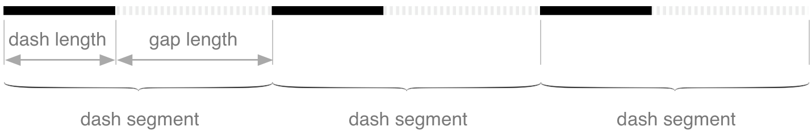通过调用 stroke 的 add_dash() 方法，你可以将 dash segment 添加到线条上，像这样：
stroke.add_dash(5, 7)
这将使线条先绘制一个五像素的短划线，然后留下一个七像素的间隔。
你并不局限于只有一个 dash segment；如果你多次调用 add_dash()，就可以创建具有多个段的线条。这些 dash segments 会依次处理，从而让你创造出不同的虚线和点线模式。例如：
stroke.add_dash(10, 2) stroke.add_dash(2, 2) stroke.add_dash(2, 2)
上面的代码将产生如下的重复线条模式：
你可以通过使用 dashoffset 属性来控制虚线的起始位置。例如，如果你在前面的 Stroke 中添加以下内容：
stroke.dashoffset = -5
你的线条现在看起来将是这样的：
如你所见，负的 dashoffset 会将线条模式向左移动，而正的 dashoffset 会将模式向右移动。
You can add “breaks” to a line to make it appear dashed or dotted. To do this, you add one or more dash segments to the stroke. Each dash segment defines a dash length and a gap length; the line will be drawn for the given dash length, and will then leave a gap of the specified length before continuing to draw the line:
.. image:: ./img/330-1.png
- align:
center
- class:
with-border
You add a dash segment to a line by calling the stroke’s add_dash() method, like this:
stroke.add_dash(5, 7)
This will give the line a five pixel dash followed by a seven pixel gap.
You aren’t limited to just having a single dash segment; if you call add_dash() multiple times, you will create a line with more than one segments. These dash segments will be processed in turn, allowing you to create varying patterns of dashes and dots. For example:
stroke.add_dash(10, 2)
stroke.add_dash(2, 2)
stroke.add_dash(2, 2)
The preceding code would result in the following repeating line pattern:
You can control where the dashed line starts by using the dashoffset attribute. For example, if you added the following to the preceding Stroke:
stroke.dashoffset = -5
Your line would now look like this:
As you can see, a negative dash offset shifts the line pattern to the left, while a positive offset shifts the pattern to the right.
Drawing roads and other complex linear features#
Drawing roads and other complex linear features
一个可能不会立即显现出来的事实是，您可以通过叠加两个 LineSymbolizer 来绘制一条道路；第一个 LineSymbolizer 绘制道路的边缘，而第二个 LineSymbolizer 绘制道路的内部。例如：
stroke = mapnik.Stroke() stroke.color = mapnik.Color(“#bf7a3a”) stroke.width = 7.0 roadEdgeSymbolizer = mapnik.LineSymbolizer(stroke)
stroke = mapnik.Stroke() stroke.color = mapnik.Color(“#ffd3a9”) stroke.width = 6.0 roadInteriorSymbolizer = mapnik.LineSymbolizer(stroke)
这种技术常用于绘制街道地图。上面定义的两个符号化器将叠加在一起，产生像这样的道路：
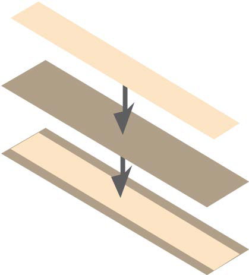这种技术不仅可以用于绘制道路；符号化器的创造性使用是使用 Mapnik 实现复杂视觉效果的主要“技巧”之一。
One thing that may not be immediately obvious is that you can draw a road onto a map by overlying two LineSymbolizers; the first LineSymbolizer draws the edges of the road, while the second LineSymbolizer draws the road’s interior. For example:
stroke = mapnik.Stroke()
stroke.color = mapnik.Color("#bf7a3a")
stroke.width = 7.0
roadEdgeSymbolizer = mapnik.LineSymbolizer(stroke)
stroke = mapnik.Stroke()
stroke.color = mapnik.Color("#ffd3a9")
stroke.width = 6.0
roadInteriorSymbolizer = mapnik.LineSymbolizer(stroke)
This technique is commonly used for drawing street maps. The two symbolizers defined above would then be overlaid to produce a road like this:
This technique can be used for more than just drawing roads; the creative use of symbolizers is one of the main “tricks” to achieving complex visual effects using Mapnik.
LinePatternSymbolizer#
LinePatternSymbolizer
LinePatternSymbolizer 用于在您想绘制一条无法使用简单 Stroke 对象渲染的线时。LinePatternSymbolizer 接受一个图像文件，并沿着线段的长度或多边形的轮廓反复绘制该图像。例如，使用以下图像文件：
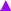LinePatternSymbolizer 将以如下方式绘制线条和多边形：
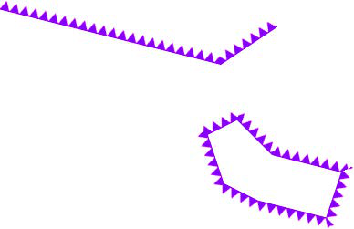请注意，线性特征和多边形边界具有方向性——即，线或多边形边框从一个点移动到下一个点，按照定义几何形状时点的顺序。例如，在前面的例子中，构成线段的点是从左到右定义的——也就是说，最左侧的点首先定义，然后是中间点，最后是最右侧的点。
特征的方向很重要，因为它会影响 LinePatternSymbolizer 绘制图像的方式。如果前面的线串是以相反的方向定义的，LinePatternSymbolizer 将像这样绘制它：
正如您所看到的，LinePatternSymbolizer 绘制图像时会朝向线的左侧，随着它从一个点移动到下一个点。要使图像朝向右侧绘制，您需要反转特征中点的顺序。
要在 Python 代码中使用 LinePatternSymbolizer，您需要创建一个 mapnik.PathExpression 对象，该对象引用您想要使用的图像文件。然后，将该对象传递给 LinePatternSymbolizer 的初始化器，如下所示:
path = mapnik.PathExpression("path/to/image.png")
symbolizer = mapnik.LinePatternSymbolizer(path)
The LinePatternSymbolizer is used in situations where you want to draw a line that can’t be rendered using a simple Stroke object. The LinePatternSymbolizer accepts an image file and draws that image repeatedly along the length of the line or around the outline of a polygon. For example, using the following image file:
A LinePatternSymbolizer would draw lines and polygons in the following way:
Note that linear features and polygon boundaries have a direction—that is, the line or polygon border moves from one point to the next, in the order in which the points were defined when the geometry was created. For example, the points that make up the line segment in the preceding example were defined from left to right—that is, the leftmost point is defined first, then the center point, and then the rightmost point.
The direction of a feature is important as it affects the way the LinePatternSymbolizer draws the image. If the preceding linestring was defined in the opposite direction, the LinePatternSymbolizer would draw it like this:
As you can see, the LinePatternSymbolizer draws the image oriented towards the left of the line, as it moves from one point to the next. To draw the image oriented towards the right, you will have to reverse the order of the points within your feature.
To use a LinePatternSymbolizer within your Python code, you create a mapnik. PathExpression object that refers to the image file you want to use. You then pass this object to the LinePatternSymbolizer initializer, like this:
path = mapnik.PathExpression("path/to/image.png")
symbolizer = mapnik.LinePatternSymbolizer(path)
绘制多边形#
Drawing polygons
正如有两个符号器用于绘制线条一样，也有两个符号器用于绘制多边形的内部：PolygonSymbolizer 和 PolygonPatternSymbolizer。让我们仔细看看这两个符号器。
Just as there are two symbolizers to draw lines, there are two symbolizers to draw the interior of a polygon: the PolygonSymbolizer and the PolygonPatternSymbolizer. Let’s take a closer look at each of these two symbolizers.
PolygonSymbolizer#
PolygonSymbolizer
您可以像这样创建一个 PolygonSymbolizer:
symbolizer = mapnik.PolygonSymbolizer()
让我们更仔细地看看控制多边形绘制方式的各种选项。
A PolygonSymbolizer fills the interior of a polygon with a single color:
You create a PolygonSymbolizer like this:
symbolizer = mapnik.PolygonSymbolizer()
Let’s take a closer look at the various options for controlling how the polygon will be drawn.
Fill color#
Fill color
默认情况下，PolygonSymbolizer 会将多边形的内部填充为灰色。要更改用于填充多边形的颜色，可以将 PolygonSymbolizer 的 fill 属性设置为所需的 Mapnik Color 对象:
symbolizer.fill = mapnik.Color("red")
有关如何创建 Mapnik Color 对象的更多信息，请参阅本章后面的 使用颜色 部分。
By default, a PolygonSymbolizer will draw the interior of the polygon in grey. To change the color used to fill the polygon, set the PolygonSymbolizer’s fill attribute to the desired mapnik Color object:
symbolizer.fill = mapnik.Color("red")
For more information about creating Mapnik Color objects, please refer to the Using Colors section later in this chapter.
Opacity#
Opacity
默认情况下，多边形将完全不透明。您可以通过设置 PolygonSymbolizer 的 opacity 属性来更改这一点，如下所示:
symbolizer.fill_opacity = 0.5
透明度的值范围从 0.0（完全透明）到 1.0（完全不透明）。在前面的插图中，左侧的多边形的透明度为 0.5。
By default, the polygon will be completely opaque. You can change this by setting the PolygonSymbolizer’s opacity attribute, like this:
symbolizer.fill_opacity = 0.5
The opacity can range from 0.0 (completely transparent) to 1.0 (completely opaque). In the preceding illustration, the left polygon had an opacity of 0.5.
Gamma correction#
Gamma correction
伽马校正是一个晦涩的概念，但有时非常有用。如果你绘制两个恰好相邻且填充颜色完全相同的多边形，你仍然会看到两者之间有一条线：
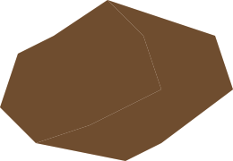这是因为 Mapnik 在处理多边形的边缘时使用了抗锯齿技术。如果你希望相邻多边形之间的线条消失，可以添加一个伽马校正因子，如下所示:
symbolizer.gamma = 0.63
这样，两个多边形就会看起来合并为一个：
可能需要进行一些实验，但通常使用大约 0.5 到 0.7 的伽马值会去除相邻多边形之间的鬼影线。默认值为 1.0，表示不会进行任何伽马校正。
Gamma correction is an obscure concept, but can be very useful at times. If you draw two polygons that touch with exactly the same fill color, you will still see a line between the two:
This is because of the way Mapnik anti-aliases the edges of the polygons. If you want these lines between adjacent polygons to disappear, you can add a gamma correction factor, like this:
symbolizer.gamma = 0.63
This results in the two polygons appearing as one:
It may take some experimenting, but using a gamma value of around 0.5 to 0.7 will generally remove the ghost lines between adjacent polygons. The default value of 1.0 will mean that no gamma correction will be performed at all.
PolygonPatternSymbolizer#
PolygonPatternSymbolizer
PolygonPatternSymbolizer 使用提供的图像文件填充多边形的内部，如下所示：
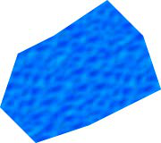该图像将被 平铺 ——即反复绘制以填充多边形的整个内部：
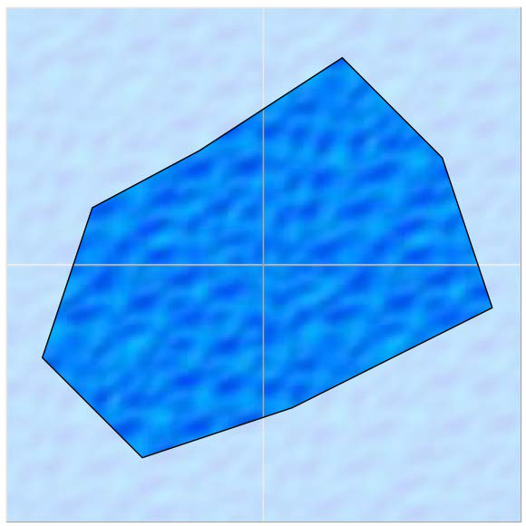{kind=link}
由于一个图块的右侧将出现在相邻图块的左侧，且图块的底部将出现在下方图块的顶部（反之亦然），因此你需要选择一种适合这种平铺方式显示的图像。
使用 PolygonPatternSymbolizer 很简单；就像使用 LinePatternSymbolizer 一样，你创建一个新的实例，并将图像文件的引用传递给一个 mapnik.PathExpression 对象:
path = mapnik.PathExpression("path/to/image.png")
symbolizer = mapnik.PolygonPatternSymbolizer(path)
The PolygonPatternSymbolizer fills the interior of a polygon using a supplied image file, like this:
The image will be tiled—that is, drawn repeatedly to fill in the entire interior of the polygon:
Because the right side of one tile will appear next to the left side of the adjacent tile, and the bottom of the tile will appear immediately above the top of the tile below it (and vice versa), you need to choose an appropriate image that will look good when it is drawn in this way.
Using the PolygonPatternSymbolizer is easy; as with the LinePatternSymbolizer you create a new instance and give it a reference to the image file in a mapnik. PathExpression object:
path = mapnik.PathExpression("path/to/image.png")
symbolizer = mapnik.PolygonPatternSymbolizer(path)
绘制标签#
Drawing labels
文本标签是任何地图中重要的一部分。在本节中，我们将探讨 TextSymbolizer，它用于在地图上绘制文本。
备注
ShieldSymbolizer 也允许绘制标签，将文本与图像结合。我们将在绘制点的部分中介绍 ShieldSymbolizer。
Textual labels are an important part of any map. In this section, we will explore the TextSymbolizer, which draws text onto a map.
备注
The ShieldSymbolizer also allows you to draw labels, combining text with an image. We will look at the ShieldSymbolizer in the section on drawing points.
TextSymbolizer#
TextSymbolizer
TextSymbolizer 允许你在点、线和多边形要素上绘制文本：
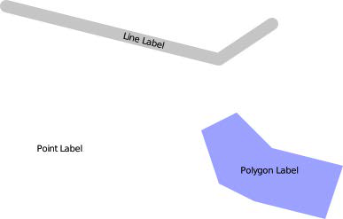TextSymbolizer 的基本使用非常简单。例如，在前面的插图中，该多边形使用以下代码进行标注:
symbolizer = mapnik.TextSymbolizer(
mapnik.Expression("[label]"),
"DejaVu Sans Book", 10,
mapnik.Color("black"))
这个符号化器将使用给定的字体、字体大小和颜色显示要素的标签字段的值。每次创建一个 TextSymbolizer 对象时，你必须提供这四个参数。
让我们更仔细地看看这些参数，以及其他可以控制文本显示方式的选项。
The TextSymbolizer allows you to draw text onto point, line and polygon features:
The basic usage of a TextSymbolizer is quite simple. For example, the polygon in the preceding illustration was labeled using the following code:
symbolizer = mapnik.TextSymbolizer(
mapnik.Expression("[label]"),
"DejaVu Sans Book", 10,
mapnik.Color("black"))
This symbolizer will display the value of the feature’s label field using the given font, font size and color. Whenever you create a TextSymbolizer object, you must provide these four parameters.
Let’s take a closer look at these parameters, as well as the other options you have for controlling how the text will be displayed.
指定要显示的文本#
Specifying the text to be displayed
你通过将一个 mapnik.Expression 对象作为第一个参数传递给 TextSymbolizer 构造函数来选择要显示的文本。在创建 Expression 时，你指定要显示的字段或属性的名称。请注意，显示的文本始终来自底层数据；没有选项可以硬编码标签的文本。
备注
对于许多数据源，字段名是区分大小写的，因此最好确保你输入的字段或属性名称完全正确。 NAME 与 name 不同。
You select the text to be displayed by passing a mapnik.Expression object as the first parameter to the TextSymbolizer’s constructor. When creating an Expression, you specify the name of the field or attribute that you want to display. Note that the text to be displayed will always be taken from the underlying data; there is no option for hardwiring a label’s text.
备注
For many data sources the name is case-sensitive, so it is best to ensure that you type in the name of the field or attribute exactly. NAME is not the same as name.
选择合适的字体#
Selecting a suitable font
标签将使用你在创建 TextSymbolizer 对象时指定的字体和字体大小绘制。你有两种选择来选择字体：可以使用 Mapnik 提供的内置字体，或者安装你自己的自定义字体。
要查看可用的字体，可以运行以下程序:
import mapnik
for font in mapnik.FontEngine.face_names():
print font
你可以通过以下网页了解有关安装自定义字体的更多信息：
http://trac.mapnik.org/wiki/UsingCustomFonts
请注意，字体是通过名称指定的，字体大小是以点为单位的。
The label will be drawn using a font and font size you specify when you create the TextSymbolizer object. You have two options for selecting a font: you can use one of the built-in fonts supplied by Mapnik, or you can install your own custom font.
To find out what fonts are available, run the following program:
import mapnik
for font in mapnik.FontEngine.face_names():
print font
You can find out more about the process involved in installing a custom font on the following web page:
http://trac.mapnik.org/wiki/UsingCustomFonts
Note that the font is specified by name, and that the font size is in points.
绘制半透明文本#
Drawing semi-transparent text
你可以通过设置 opacity 属性来控制文本的透明度或不透明度，像这样:
symbolizer.opacity = 0.5
透明度的范围从 0.0（完全透明）到 1.0（完全不透明）。
You can control how opaque or transparent the text is by setting the opacity attribute, like this:
symbolizer.opacity = 0.5
The opacity ranges from 0.0 (completely transparent) to 1.0 (completely opaque).
控制文本放置#
Controlling text placement
有两种方式可以让 TextSymbolizer 将文本放置在要标注的要素上。使用 点放置 （默认方式），Mapnik 会按以下方式在三个要素上绘制标签：
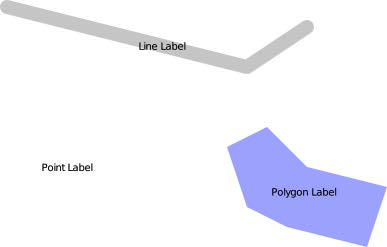如你所见，标签被绘制在每个要素的中心，并且标签是水平绘制的，与线的方向无关。另一种将文本放置到要素上的方式是使用 线放置 。如果使用线放置来标注上述要素，则会得到如下结果：
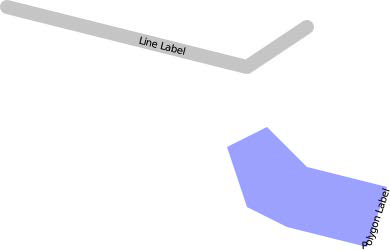请注意，矩形的标签现在沿着多边形的边界绘制，并且标签遵循线的方向。点要素没有被标注，因为点要素内部没有线。
你可以通过设置符号化器的 label_placement 属性来控制文本的放置方式，如下所示:
sym1.label_placement = mapnik.label_placement.POINT_PLACEMENT
sym2.label_placement = mapnik.label_placement.LINE_PLACEMENT
There are two ways in which the TextSymbolizer places text onto the feature being labeled. Using point placement (the default), Mapnik would draw labels on the three features shown earlier in the following way:
As you can see, the labels are drawn at the center of each feature, and the labels are drawn horizontally with no regard to the orientation of the line. The other option for placing text onto the feature is to use line placement. Labeling the preceding features using line placement would result in the following:
Note that the polygon’s label is now drawn along the boundary of the polygon, and the labels now follow the orientation of the line. The point feature isn’t labeled at all, since the point feature has no lines within it.
You control the placement of the text by setting the symbolizer’s label_placement attribute, like this:
sym1.label_placement = mapnik.label_placement.POINT_PLACEMENT
sym2.label_placement = mapnik.label_placement.LINE_PLACEMENT
重复标签#
Repeating labels
当使用 LINE_PLACEMENT 放置标签时，Mapnik 默认只会在线的中间绘制一次标签。然而，在许多情况下，将标签沿线的长度重复显示会更合适。为此，你可以设置符号化器的 label_spacing 属性，如下所示:
symbolizer.label_spacing = 30
设置此属性会导致标签沿着线或多边形边界重复显示。该值表示每个重复标签之间的间距，单位为像素。使用上述的标签间距，我们的线条和多边形要素将如下所示：
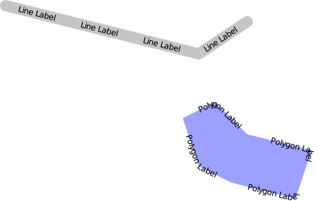此外，还有几个其他属性可以用来微调重复标签的显示方式：
symbolizer.force_odd_labels = True这会告诉 TextSymbolizer 始终绘制奇数个标签。在某些情况下，这样可以使标签看起来更好。symbolizer.maximum_angle_char_delta = 45设置从一个字符到下一个字符的最大角度变化（单位：度）。使用此设置可以防止 Mapnik 在急转弯处绘制标签。例如：
symbolizer.minimum_distance = 40设置重复标签之间的最小距离，单位为像素。symbolizer.label_position_tolerance = 20设置标签沿线移动的最大距离，以避免与其他标签或急转弯相撞。该值单位为像素，默认为 minimum_distance 除以 2。
When labels are placed using LINE_PLACEMENT, Mapnik will by default draw the label once, in the middle of the line. In many cases, however, it makes sense to have the label repeated along the length of the line. To do this, you set the symbolizer’s label_spacing attribute, like this:
symbolizer.label_spacing = 30
Setting this attribute causes the labels to be repeated along the line or polygon boundary. The value is the amount of space between each repeated label, in pixels. Using the preceding label spacing, our line and polygon features would be displayed in the following way:
There are several other attributes that can be used to fine-tune the way repeated labels are displayed:
symbolizer.force_odd_labels = TrueThis tells the TextSymbolizer to always draw an odd number of labels. This can make the labels look better in some situations.
symbolizer.maximum_angle_char_delta = 45This sets the maximum change in angle (measured in degrees) from one character to the next. Using this can prevent Mapnik from drawing labels around sharp corners. For example:
symbolizer.minimum_distance = 40The minimum distance between repeated labels, in pixels.
symbolizer.label_position_tolerance = 20This sets the maximum distance a label can move along the line to avoid other labels and sharp corners. The value is in pixels, and defaults to minimum_distance divided by 2.
控制文本重叠#
Controlling text overlap
默认情况下，Mapnik 确保两个标签永远不会重叠。如果可能，它会调整标签的位置以避免重叠。如果你仔细查看以下两个多边形边界上的标签，你会发现第二个多边形的标签位置已被调整，以避免重叠：
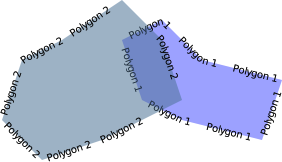{kind=link}
如果 Mapnik 判断无法移动标签而不会完全误表示标签位置，它将完全隐藏该标签。在以下插图中，你可以看到两个多边形被移动到重叠的情况：
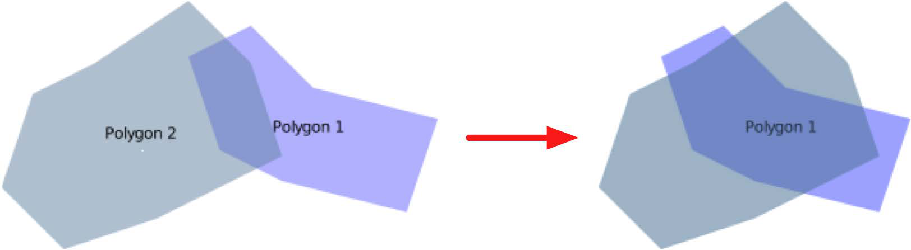allow_overlap 属性允许你改变这种行为:
symbolizer.allow_overlap = True
当启用此选项时，Mapnik 将不会隐藏重叠的标签，而是将它们简单地重叠绘制：
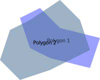{kind=link}
By default, Mapnik ensures that two labels will never intersect. If possible, it will move the labels to avoid an overlap. If you look closely at the labels drawn around the boundary of the following two polygons, you will see that the position of the second polygon’s labels has been adjusted to avoid an overlap:
If Mapnik decides that it can’t move the label without completely misrepresenting the position of the label, then it will hide the label completely. You can see this in the following illustration, where the two polygons are moved so they overlap:
The allow_overlap attribute allows you to change this behavior:
symbolizer.allow_overlap = True
Instead of hiding the overlapping labels, Mapnik will simply draw them one on top of the other:
在深色背景上绘制文本#
Drawing text on a dark background
默认情况下，TextSymbolizer 会直接将文本绘制到地图上。当文本放置在浅色区域时，这种方式效果很好，但如果底部区域是深色的，文本可能难以阅读甚至看不见：
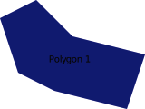{kind=link}
当然，你可以选择浅色的文本颜色，但这要求你提前知道背景可能是什么。一个更好的解决方案是给文本绘制一个“光晕”，就像这样：
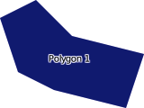{kind=link}
halo_fill 和 halo_radius 属性允许你定义绘制在文本周围的光晕的颜色和大小，如下所示:
symbolizer.halo_fill = mapnik.Color("white")
symbolizer.halo_radius = 1
半径以像素为单位指定；通常像 1 或 2 这样的小值就足够了，可以确保文本在深色背景下可读。
The TextSymbolizer will normally draw the text directly onto the map. This works well when the text is placed over a lightly-colored area of the map, but if the underlying area is dark the text can be hard to read or even invisible:
Of course, you could choose a light text color, but that requires you to know in advance what the background is likely to be. A better solution is to draw a “halo” around the text, like this:
The halo_fill and halo_radius attributes allow you to define the color and size of the halo to draw around the text, like this:
symbolizer.halo_fill = mapnik.Color("white")
symbolizer.halo_radius = 1
The radius is specified in pixels; generally a small value such as 1 or 2 is enough to ensure that the text is readable against a dark background.
调整文本的位置#
Adjusting the position of the text
默认情况下，Mapnik 会计算文本应该显示的点，然后将文本居中显示在该点上，如下所示：
{kind=link}
你可以通过两种方式来调整这个位置：通过改变 垂直对齐方式 和通过指定 文本位移。
垂直对齐方式可以通过改变 TextSymbolizer 的 vertical_alignment 属性来控制。你可以使用三种垂直对齐值:
sym1.vertical_alignment = mapnik.vertical_alignment.TOP
sym2.vertical_alignment = mapnik.vertical_alignment.MIDDLE
sym3.vertical_alignment = mapnik.vertical_alignment.BOTTOM
mapnik.vertical_alignment.MIDDLE 是默认值，将标签垂直居中显示在点上，如之前所示。
如果你将垂直对齐方式改为 mapnik.vertical_alignment.TOP，标签会被绘制在点的上方，如下所示：
{kind=link}
相反，如果你将垂直对齐方式改为 mapnik.vertical_alignment.BOTTOM，标签会被绘制在点的下方：
{kind=link}
调整文本位置的另一个选项是使用 displacement 属性，通过给定的像素数来移动文本。例如:
symbolizer.displacement = (5, 10)
这会将标签从其正常位置向右移动 5 像素，并向下移动 10 像素：
{kind=link}
备注
注意
改变标签的垂直位移还会改变标签的默认垂直对齐方式值。这可能会导致标签位置的意外移动，因为设置垂直位移时，标签的垂直对齐方式会作为副作用发生变化。为避免这种情况，你应该在改变垂直位移时明确设置 vertical_alignment 属性。
By default, Mapnik calculates the point at which the text should be displayed, and then displays the text centered over that point, like this:
You can adjust this positioning in two ways: by changing the vertical alignment, and by specifying a text displacement.
The vertical alignment can be controlled by changing the TextSymbolizer’s vertical_alignment attribute. There are three vertical alignment values you can use:
sym1.vertical_alignment = mapnik.vertical_alignment.TOP
sym2.vertical_alignment = mapnik.vertical_alignment.MIDDLE
sym3.vertical_alignment = mapnik.vertical_alignment.BOTTOM
mapnik.vertical_alignment.MIDDLE is the default, and places the label centered vertically over the point as shown earlier.
If you change the vertical alignment to mapnik.vertical_alignment.TOP, the label will be drawn above the point, like this:
Conversely, if you change the vertical alignment to mapnik.vertical_alignment. BOTTOM, the label will be drawn below the point:
Your other option for adjusting text positioning is to use the displacement attribute to displace the text by a given number of pixels. For example:
symbolizer.displacement = (5, 10)
This will shift the label five pixels to the right and ten pixels down from its normal position:
备注
Beware
Changing the vertical displacement of a label will also change the label’s default vertical_alignment value. This can result in your label being moved in unexpected ways, because the vertical alignment of the label is changed as a side-effect of setting the vertical displacement. To avoid this, you should always set the vertical_alignment attribute explicitly whenever you change the vertical displacement.
跨多行拆分标签#
Splitting labels across multiple lines
有时候，标签的长度可能太长，无法以你希望的方式显示：
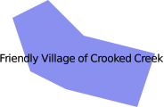{kind=link}
在这种情况下，你可以使用 wrap_width 属性来强制标签换行显示。例如:
symbolizer.wrap_width = 70
这将导致前面的标签像这样显示：
{kind=link}
你指定的值是每行文本的最大宽度，单位为像素。
Sometimes a label is too long to be displayed in the way that you might like:
In this case, you can use the wrap_width attribute to force the label to wrap across multiple lines. For example:
symbolizer.wrap_width = 70
This will cause the preceding label to be displayed like this:
The value you specify is the maximum width of each line of text, in pixels.
控制字符和行距#
Controlling character and line spacing
你可以通过设置 character_spacing 属性来在标签的每个字符之间添加额外的空间，如下所示:
symbolizer.character_spacing = 3
这将使我们的多边形标签显示如下：
{kind=link}
你还可以使用 line_spacing 属性来改变各行之间的间距：
symbolizer.line_spacing = 8
这样，我们的多边形标签将显示如下：
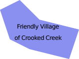{kind=link}
character_spacing 和 line_spacing 的值都以像素为单位。
You can add extra space between each character in a label by setting the character_spacing attribute, like this:
symbolizer.character_spacing = 3
This results in our polygon being labeled like this:
You can also change the spacing between the various lines using the line_spacing attribute:
symbolizer.line_spacing = 8
Our polygon will then look like this:
Both the character spacing and the line spacing values are in pixels.
控制大写#
Controlling capitalization
有时你可能想要改变显示文本的大小写。你可以通过设置 text_transform 属性来实现，如下所示:
symbolizer1.text_transform = mapnik.text_transform.uppercase
symbolizer2.text_transform = mapnik.text_transform.lowercase
这两个设置将导致标签显示如下：
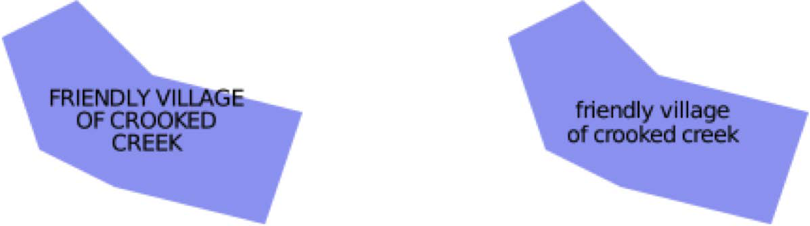{kind=link}
There are times when you might want to change the case of the text being displayed. You can do this by setting the text_transform attribute, like this:
symbolizer1.text_transform = mapnik.text_transform.uppercase
symbolizer2.text_transform = mapnik.text_transform.lowercase
These two settings will result in the labels being displayed as follows:
高级文本放置和格式#
Advanced text placement and formatting
如果之前的标签选项不足以满足你的需求，你可以利用 Mapnik 2.1 中的一些新特性，这些特性几乎能让你对标签的放置和格式化方式进行无限制的控制。 symbolizer.placements.defaults.format_tree 属性允许你定义自己的格式化选项。例如:
format1 = mapnik.FormattingText("[name]")
format1.format.face_name = "DejaVu Sans Book"
format1.format.size = 10
format2 = mapnik.FormattingText("[abbreviation]")
format2.format.face_name = "DejaVu Sans Book"
format2.format.size = 9
formats = mapnik.FormattingList([format1, format2])
textSymbolizer.placements.defaults.format_tree = formats
这段代码设置了两个独立的格式化器，第一个显示 name 属性为 10 号字体，而第二个显示 abbreviation 属性为 9 号字体。当文本符号化器设置为使用 FormattingList 对象时，它将依次尝试每个格式，直到找到适合可用空间的格式。
这样，如果有足够的空间， name 属性会被显示；如果空间不足，则会切换为显示 abbreviation 属性（字体更小）。最终的效果如下：
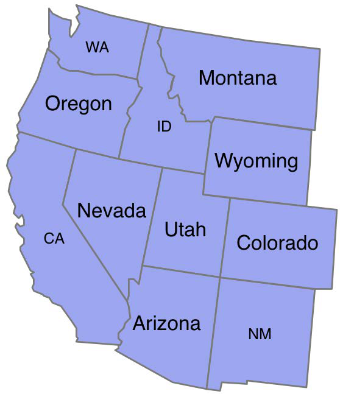{kind=link}
格式化列表只是格式树可用的方式之一。你甚至可以创建自己的 mapnik.FormattingNode 子类，并在每个特征渲染时手动计算标签（及其相关的格式）。
要了解如何在 Python 中使用这些高级格式化选项，请查看 Mapnik 源代码中的 tests/visual_tests/test_python.py 文件。
If the preceding labeling options aren’t enough, you can make use of some amazing new features in Mapnik 2.1 that give you almost infinite control over how your labels are placed and formatted. The symbolizer.placements.defaults.format_tree attribute lets you define your own formatting options. For example:
format1 = mapnik.FormattingText("[name]")
format1.format.face_name = "DejaVu Sans Book"
format1.format.size = 10
format2 = mapnik.FormattingText("[abbreviation]")
format2.format.face_name = "DejaVu Sans Book"
format2.format.size = 9
formats = mapnik.FormattingList([format1, format2])
textSymbolizer.placements.defaults.format_tree = formats
This code sets up two separate formatters, one displaying the name attribute in 10 point text, while the second displays the abbreviation attribute in 9 point text. When the text symbolizer is set up to use a FormattingList object, each of the formats will be tried in turn until a format is found that fits in the available space.
This has the effect of displaying the name attribute if there is room, but switching to the abbreviation attribute (in a smaller text size) if the name won’t fit. The end result would look something like this:
Formatting lists are only one possible way in which the format tree can be used. You can even create your own custom subclass of mapnik.FormattingNode and manually calculate the label (and its associated formatting) as each feature is rendered.
To see how these advanced formatting options can be used from within Python, check out the tests/visual_tests/test_python.py file in the Mapnik source code.
绘制点#
Drawing points
在 Mapnik 中，有两种绘制点的方法： PointSymbolizer 允许你在给定的点位置绘制一个图像，而 ShieldSymbolizer 则将图像与文本标签结合，生成一个“盾牌”样式。
让我们来看一下这两种符号化器是如何工作的。
There are two ways of drawing a point using Mapnik: the PointSymbolizer allows you to draw an image at a given point, and the ShieldSymbolizer combines an image with a textual label to produce a “shield”.
Let’s examine how each of these two symbolizers work.
PointSymbolizer#
PointSymbolizer
PointSymbolizer 在地图上绘制一个点图像。默认构造函数不需要参数，会将每个点显示为一个 4x4 像素的黑色方块:
symbolizer = PointSymbolizer()
或者，你可以提供一个图像文件的路径， PointSymbolizer 将使用该图像绘制每个点:
path = mapnik.PathExpression("path/to/image.png")
symbolizer = PointSymbolizer(path)
备注
请注意，PointSymbolizer 会将图像绘制在指定点的中心位置。你可能需要在图像周围添加透明空间，以确保图像的期望部分位于所需的点上。例如，如果你想在某个确切位置绘制一个大头针，你可能需要将图像格式化如下：
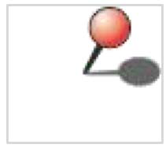{kind=link}
备注
额外的（透明的）空白区域确保了大头针的尖端位于图像的中心，从而可以确保图像准确地绘制在地图上所需的位置。
无论你是否提供图像，PointSymbolizer 都有一些属性，你可以用来修改其行为：
symbolizer.allow_overlap = True如果将该属性设置为
True，即使图像重叠，所有点也会被绘制。默认值（False）表示只有在点不重叠时才会绘制它们。
symbolizer.opacity = 0.75此属性控制绘制图像时的不透明度或透明度。值为 0.0 时，图像会完全透明；值为 1.0（默认值）时，图像会完全不透明。
symbolizer.transform = "..."一个 SVG 转换表达式，你可以使用它来操作要显示的图像。例如，
transform="rotate(45) scale(0.5, 0.5)"会将图像顺时针旋转 45 度，然后将其缩放为原始大小的 50%。
A PointSymbolizer draws an image at the point. The default constructor takes no arguments and displays each point as a 4 x 4 pixel black square:
symbolizer = PointSymbolizer()
Alternatively, you can supply a path to an image file which the PointSymbolizer will use to draw each point:
path = mapnik.PathExpression("path/to/image.png")
symbolizer = PointSymbolizer(path)
备注
Be aware that the PointSymbolizer draws the image centered over the desired point. You may have to add transparent space around the image so that the desired part of the image appears over the desired point. For example, if you wish to draw a pin at an exact position, you might need to format the image like this:
备注
The extra (transparent) whitespace ensures that the point of the pin is in the center of the image, allowing the image to be drawn exactly at the desired position on the map.
Whether you supply an image or not, the PointSymbolizer has some attributes, which you can use to modify its behavior:
symbolizer.allow_overlap = TrueIf you set this attribute to
True, all points will be drawn even if the images overlap. The default (False) means that points will only be drawn if they don’t overlap.
symbolizer.opacity = 0.75This attribute controls the amount of opaqueness or transparency used to draw the image. A value of 0.0 will draw the image completely transparent, while a value of 1.0 (the default) will draw the image completely opaque.
symbolizer.transform = "..."An SVG transformation expression which you can use to manipulate the image to be displayed. For example,
transform="rotate(45) scale(0.5, 0.5)"will rotate the image clockwise by 45 degrees and then scale it to 50 percent of its original size.
ShieldSymbolizer#
ShieldSymbolizer
ShieldSymbolizer 绘制一个文本标签和一个关联的图像：
{kind=link}
ShieldSymbolizer 的工作方式与同时使用 TextSymbolizer 和 PointSymbolizer 渲染相同数据完全相同。唯一的区别是 ShieldSymbolizer 确保文本和图像始终一起显示；你永远不会只看到文本或只看到图像，它们总是一起显示的。
当你创建一个 ShieldSymbolizer 时，需要提供以下几个参数:
symbolizer = mapnik.ShieldSymbolizer(fieldExpression,
font, fontSize, color,
imagePath)
以下是上述代码中各个部分的解释：
fieldExpression 是一个 Mapnik Expression 对象，指定要显示为文本标签的字段或属性
font 是绘制文本时使用的字体名称
fontSize 是文本的大小，以点为单位
color 是一个 Mapnik Color 对象，定义用于绘制文本的颜色
imagePath 是一个 Mapnik PathExpression 对象，包含要使用的图像文件的路径
因为 ShieldSymbolizer 是 TextSymbolizer 的子类，所以所有 TextSymbolizer 可用的定位和格式化选项也可以应用到 ShieldSymbolizer 上。此外，因为它还绘制一个图像，ShieldSymbolizer 也继承了 PointSymbolizer 的 allow_overlap 和 opacity 属性。
要设置 ShieldSymbolizer 中文本的透明度，请使用 text_opacity 属性。
需要注意的是，你很可能需要设置 ShieldSymbolizer 的 displacement 属性，以便正确地定位文本，因为默认情况下，文本会直接绘制在图像的中心位置。
A ShieldSymbolizer draws a textual label and an associated image:
The ShieldSymbolizer works in exactly the same way as having a TextSymbolizer and a PointSymbolizer rendering the same data. The only difference is that the ShieldSymbolizer ensures that the text and image are always displayed together; you’ll never get the text without the image, or vice versa.
When you create a ShieldSymbolizer, you have to provide a number of parameters:
- symbolizer = mapnik.ShieldSymbolizer(fieldExpression,
font, fontSize, color, imagePath)
Following are the components of the preceding code:
fieldExpression is a Mapnik Expression object specifying the field or attribute to display as the textual label
font is the name of the font to use when drawing the text
fontSize of the size of the text, in points
color is a Mapnik Color object that defines the color to use for drawing the text
imagePath is a Mapnik PathExpression object that holds the path to the desired image file
Because ShieldSymbolizer is a subclass of TextSymbolizer, all the positioning and formatting options available for a TextSymbolizer can also be applied to a ShieldSymbolizer. And because it also draws an image, a ShieldSymbolizer also has the allow_overlap and opacity attributes of a PointSymbolizer.
To set the opacity of the ShieldSymbolizer’s text, use the text_opacity attribute.
Be aware that you will most probably need to set the ShieldSymbolizer’s displacement attribute to position the text correctly, as by default the text appears directly over the point, at the center of the image.
绘制光栅图像#
Drawing raster images
GDAL 和 Raster 数据源允许你在地图中包含栅格图像。RasterSymbolizer 将这些栅格数据显示在地图图层中，如下所示：
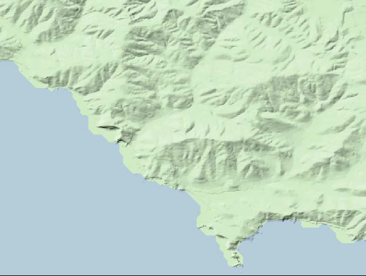创建一个 RasterSymbolizer 非常简单:
symbolizer = mapnik.RasterSymbolizer()
RasterSymbolizer 将图层的栅格格式数据源内容绘制到地图上。RasterSymbolizer 支持以下选项来控制栅格数据的显示方式：
symbolizer.opacity = 0.5这个属性控制栅格图像的透明度。值为 0.0 时图像完全透明，值为 1.0 时图像完全不透明。默认情况下，栅格图像将完全不透明。
symbolizer.comp_op = mapnik.CompositeOp.hard_light该属性告诉 RasterSymbolizer 如何将栅格数据与之前渲染的地图数据进行合并。这些“合成”操作类似于图像编辑程序（如 Photoshop 或 GIMP）中图层合并的方式。支持的合成操作包括：
symbolizer.scaling = mapnik.scaling_method.bilinear该属性允许你控制用于缩放栅格图像数据的算法。可用的选项包括：near（使用最近邻算法）、bilinear（对所有四个颜色通道使用双线性插值）和 bilinear8（仅对单个颜色通道使用双线性插值）。
symbolizer.colorizer = myRasterColorizer该属性允许你为原始栅格数据应用自定义调色板，例如改变 DEM 文件的颜色。有关如何在 Python 中设置栅格颜色化器的信息，请参阅 Mapnik 网站上 RasterColorizer 类的文档。
备注
请注意，Mapnik 不支持对栅格数据进行动态投影变换。如果你需要生成一个使用与栅格数据不同的投影的地图，你需要在显示之前将栅格数据重新投影，例如使用 gdalwarp 工具。
RasterSymbolizer 的一个主要用途是显示如前所示的 阴影地形 背景。这为观众提供了对底层地形的良好印象。
备注
上述图像是使用来自国家高程数据集（National Elevation Dataset）中的数字高程图（DEM）数据文件创建的。此文件通过使用 gdaldem 工具的 hillshade 选项处理，生成了一个阴影地形的灰度图像。然后，使用 RasterSymbolizer 将该图像设置为 hard_light 模式，并将其覆盖在一个淡绿色背景上，同时使用 GSHHS 海岸线数据库定义海岸线。如果你想将阴影地形图像作为地图背景显示，这一过程可能会很有用。
The GDAL and Raster data sources allow you to include raster images within a map. The RasterSymbolizer takes this raster data and displays it within a map layer, like this:
Creating a RasterSymbolizer is very simple:
symbolizer = mapnik.RasterSymbolizer()
A RasterSymbolizer draws the contents of the layer’s raster-format data source onto the map. The RasterSymbolizer supports the following options for controlling how the raster data is displayed:
symbolizer.opacity = 0.5This controls how opaque the raster image will be. A value of 0.0 makes the image fully transparent, and a value of 1.0 makes it fully opaque. By default, the raster image will be completely opaque.
symbolizer.comp_op = mapnik.CompositeOp.hard_lightThis attribute tells the RasterSymbolizer how to merge the raster data with the previously-rendered map data beneath it. These “compositing” operations are similar to the way layers are merged in image editing programs such as Photoshop or the GIMP. The following compositing operations are supported:
symbolizer.scaling = mapnik.scaling_method.bilinearThis allows you to control the algorithm used to scale the raster image data. The available options are: near (uses the nearest-neighbor algorithm), bilinear (uses bilinear interpolation across all four color channels), and bilinear8 (uses bilinear interpolation for just a single color channel).
symbolizer.colorizer = myRasterColorizerThis lets you apply a custom palette to the raw raster data, for example to change the coloring of a DEM file. For information on how to set up a raster colorizer in Python, see the documentation for the RasterColorizer class on the Mapnik website.
备注
Note that Mapnik does not support on-the-fly reprojection of raster data. If you need to generate a map using a projection that is different from the raster data’s projection, you will need to reproject the raster data before it can be displayed, for example by using gdalwarp.
One of the main uses for a RasterSymbolizer is to display a shaded relief background such as the one shown earlier. This gives the viewer a good impression of the underlying terrain.
备注
The preceding image was created using a Digital Elevation Map (DEM-format) data file taken from the National Elevation Dataset. This file was processed using the gdaldem utility with the hillshade option to create a shaded relief grayscale image. This image was then displayed using a RasterSymbolizer set to hard_light mode, laid on top of a pale green background with the coastline defined from the GSHHS shoreline database. You may find this process useful if you want to display a shaded relief image as a background for your map.
使用颜色#
Using colors
许多 Mapnik 的符号化器要求你提供一个颜色值。这些颜色值是使用 mapnik.Color 类定义的。mapnik.Color 的实例可以通过以下四种方式创建：
mapnik.Color(r, g, b, a)通过提供单独的红色、绿色、蓝色和 alpha（透明度）值来创建一个 Color 对象。每个值应该在 0 到 255 之间。
mapnik.Color(r, g, b)通过提供红色、绿色和蓝色分量来创建一个 Color 对象。每个值应该在 0 到 255 之间。生成的对象将是完全不透明的。
mapnik.Color(colorName)通过指定一个标准的 CSS 颜色名称来创建一个 Color 对象。可用颜色名称的完整列表可以在以下网址找到：http://www.w3.org/TR/css3-color/#svg-color。
mapnik.Color(colorCode)通过使用 HTML 颜色代码创建一个 Color 对象，例如 “#806040” 是中等棕色。
Many of the Mapnik symbolizers require you to supply a color value. These color values are defined using the mapnik.Color class. Instances of mapnik.Color can be created in one of four ways:
mapnik.Color(r, g, b, a)Creates a Color object by supplying separate red, green, blue, and alpha (opacity) values. Each of these values should be in the range 0 to 255.
mapnik.Color(r, g, b)Creates a Color object by supplying red, green, and blue components. Each value should be in the range 0 to 255. The resulting object will be completely opaque.
mapnik.Color(colorName)Creates a Color object by specifying a standard CSS color name. A complete list of the available color names can be found at: http://www.w3.org/TR/css3-color/#svg-color.
mapnik.Color(colorCode)Creates a Color object using an HTML color code, for example “#806040” is medium brown.
地图和图层#
Maps and layers
一旦设置了数据源、符号化器、规则和样式，你就可以将它们组合成 Mapnik 层，并将这些层放置到地图上。为此，你首先需要创建一个 mapnik.Map 对象，来表示整张地图:
map = mapnik.Map(width, height, srs)
你需要提供想要生成的地图图像的宽度和高度（单位：像素），以及一个可选的 Proj.4 格式初始化字符串 srs。如果没有指定空间参考系统，地图将使用 `+proj=latlong +datum=WGS84`（即使用 WGS84 基准的未经投影的经纬度坐标）。
创建地图后，你可以设置地图的背景颜色，并通过调用 map.append_style() 方法将各种样式添加到地图中:
map.background_color = mapnik.Color('white')
map.append_style("countryStyle", countryStyle)
map.append_style("roadStyle", roadStyle)
map.append_style("pointStyle", pointStyle)
map.append_style("rasterStyle", rasterStyle)
...
除了指定用于地图的背景颜色外，你还可以通过设置地图的 background_image 属性来使用背景图像。请注意，目前该属性接受字符串值，而不是 Mapnik 的 PathExpression，尽管未来可能会有所更改。
接下来，你需要在地图中创建各种层。为此，你创建一个 mapnik.Layer 对象来表示每个地图层:
layer = mapnik.Layer(layerName, srs)
每个层都有一个唯一的名称，并且可以选择性地与空间参考（srs）关联。srs 字符串是 Proj.4 格式的初始化字符串；如果未提供空间参考，层将使用 +proj=latlong +datum=WGS84。
创建完地图层后，你需要为该层分配数据源，并选择将应用于该层的样式，通过名称标识每个样式:
layer.datasource = myDatasource
layer.styles.append("countryStyle")
layer.styles.append("rasterStyle")
...
最后，将新创建的层添加到地图中:
map.layers.append(layer)
接下来，让我们更详细地了解一下 Mapnik 的 Map 和 Layer 对象的一些可选方法和属性。这些方法和属性在操作地图层时非常有用，也可以帮助设置基于当前地图比例因子的选择性规则和层。
Once you have set up your data sources, symbolizers, rules and styles, you can combine them into Mapnik layers and place the various layers together onto a map. To do this, you first create a mapnik.Map object to represent the map as a whole:
map = mapnik.Map(width, height, srs)
You supply the width and height of the map image you want to generate, in pixels, and an optional Proj.4-format initialization string in srs. If you do not specify a spatial reference system, the map will use “+proj=latlong +datum=WGS84” (unprojected lat/long coordinates on the WGS84 datum).
After creating the map, you set the map’s background color, and add your various styles to the map by calling the map.append_style() method:
map.background_color = mapnik.Color('white')
map.append_style("countryStyle", countryStyle)
map.append_style("roadStyle", roadStyle)
map.append_style("pointStyle", pointStyle)
map.append_style("rasterStyle", rasterStyle)
...
As well as specifying the background color to use for your map, you can also use a background image by setting the map’s background_image attribute. Note that this currently accepts a string value, rather than a Mapnik PathExpression, though this may change in the future.
You next need to create the various layers within the map. To do this, you create a mapnik.Layer object to represent each map layer:
layer = mapnik.Layer(layerName, srs)
Each layer is given a unique name, and can optionally have a spatial reference associated with it. The srs string is a Proj.4 format initialization string; if no spatial reference is given, the layer will use “+proj=latlong +datum=WGS84”.
Once you have created your map layer, you assign it a datasource and choose the style(s) which will apply to that layer, identifying each style by name:
layer.datasource = myDatasource
layer.styles.append("countryStyle")
layer.styles.append("rasterStyle")
...
Finally, you add your new layer to the map:
map.layers.append(layer)
Let’s take a closer look at some of the optional methods and attributes of the Mapnik Map and Layer objects. These can be useful when manipulating map layers, and for setting up rules and layers which are selectively applied based on the map’s current scale factor.
地图属性和方法#
Map attributes and methods
mapnik.Map 类提供了几个附加的方法和属性，你可能会觉得有用：
- map.envelope()
该方法返回一个 mapnik.Box2d 对象，表示将要显示的地图区域。mapnik.Box2d 对象支持许多有用的方法和属性，其中最重要的是包括 minx、miny、maxx 和 maxy 属性。这些属性定义了地图的边界框，以地图坐标表示。
- map.aspect_fix_mode = mapnik.aspect_fix.GROW_CANVAS
这个属性控制当地图的边界的纵横比与渲染的地图图像的纵横比不匹配时，Mapnik 如何调整地图。支持以下值：
GROW_BBOX：扩展地图的边界框以匹配生成图像的纵横比。这是默认行为。
GROW_CANVAS：扩展生成的图像以匹配边界框的纵横比。
SHRINK_BBOX：缩小地图的边界框以匹配生成图像的纵横比。
SHRINK_CANVAS：缩小生成的图像以匹配地图边界框的纵横比。
ADJUST_BBOX_HEIGHT：扩展或缩小地图边界框的高度，同时保持宽度不变，以匹配生成图像的纵横比。
ADJUST_BBOX_WIDTH：扩展或缩小地图边界框的宽度，同时保持高度不变，以匹配生成图像的纵横比。
ADJUST_CANVAS_HEIGHT：扩展或缩小生成图像的高度，同时保持宽度不变，以匹配地图边界框的纵横比。
ADJUST_CANVAS_WIDTH：扩展或缩小生成图像的宽度，同时保持高度不变，以匹配地图边界框的纵横比。
- map.scale_denominator()
返回生成地图时使用的当前比例分母。比例分母取决于地图的边界和渲染图像的大小。
- map.scale()
返回地图使用的当前比例因子。比例因子取决于地图的边界和渲染图像的大小。
- map.zoom_all()
设置地图的边界框，以涵盖每个地图层的边界框。这确保所有地图数据都会显示在地图上。
- map.zoom_to_box(mapnik.Box2d(minX, minY, maxX, maxY))
将地图的边界框设置为给定的值。请注意，minX、minY、maxX 和 maxY 都是在地图的坐标系统中的值。
The mapnik.Map class provides several additional methods and attributes which you may find useful:
map.envelope()This method returns a mapnik.Box2d object representing the area of the map that is to be displayed. The mapnik.Box2d object supports a number of useful methods and attributes, but most importantly includes minx, miny, maxx, and maxy attributes. These define the map’s bounding box in map coordinates.
map.aspect_fix_mode = mapnik.aspect_fix.GROW_CANVASThis controls how Mapnik adjusts the map if the aspect ratio of the map’s bounds does not match the aspect ratio of the rendered map image. The following values are supported:
GROW_BBOX expands the map’s bounding box to match the aspect ratio of the generated image. This is the default behavior.
GROW_CANVAS expands the generated image to match the aspect ratio of the bounding box.
SHRINK_BBOX shrinks the map’s bounding box to match the aspect ratio of the generated image.
SHRINK_CANVAS shrinks the generated image to match the aspect ratio of the map’s bounding box.
ADJUST_BBOX_HEIGHT expands or shrinks the height of the map’s bounding box, while keeping the width constant, to match the aspect ratio of the generated image.
ADJUST_BBOX_WIDTH expands or shrinks the width of the map’s bounding box, while keeping the height constant, to match the aspect ratio of the generated image.
ADJUST_CANVAS_HEIGHT expands or shrinks the height of the generated image, while keeping the width constant, to match the aspect ratio of the map’s bounding box.
ADJUST_CANVAS_WIDTH expands or shrinks the width of the generated image, while keeping the height constant, to match the aspect ratio of the map’s bounding box.
map.scale_denominator()Returns the current scale denominator used to generate the map. The scale denominator depends on the map’s bounds and the size of the rendered image.
map.scale()Returns the current scale factor used by the map. The scale factor depends on the map’s bounds and the size of the rendered image.
map.zoom_all()Set the map’s bounding box to encompass the bounding box of each of the map’s layers. This ensures that all the map data will appear on the map.
map.zoom_to_box(mapnik.Box2d(minX, minY, maxX, maxY))Set the map’s bounding box to the given values. Note that minX, minY, maxX, and maxY are all in the map’s coordinate system.
图层属性和方法#
Layer attributes and methods
mapnik.Layer 类具有以下一些有用的属性和方法：
- layer.envelope()
该方法返回一个 mapnik.Box2d 对象，表示地图上包含所有图层数据的矩形区域。该对象具有 minx、miny、maxx 和 maxy 属性，存储图层边界框的坐标。
- layer.active = False
这个属性可以用于隐藏地图中的某个图层。当图层的 active 属性设置为 False 时，该图层不会显示在地图上。
- layer.minzoom = 1.0/100000
这个属性设置了图层的最小缩放比例因子，只有在图层满足该缩放比例时，才会在地图中显示。如果没有设置此属性，则图层没有最小缩放比例。
- layer.maxzoom = 1.0/10000
这个属性设置了图层的最大缩放比例因子，只有在图层满足该缩放比例时，才会在地图上绘制。如果没有设置此属性，则图层没有最大缩放比例。
- layer.visible(1.0/50000)
该方法返回一个布尔值，指示图层在给定的缩放比例下是否可见。如果图层是活动的，且给定的缩放比例在指定的最小和最大值之间，则该图层是可见的。
The mapnik.Layer class has the following useful attributes and methods:
layer.envelope()This method returns a mapnik.Box2d object representing the rectangular area of the map that encompasses all the layer’s data. This object has minx, miny, maxx, and maxy attributes that hold the coordinates for the layer’s bounding box.
layer.active = FalseThis can be used to hide a layer within the map.
layer.minzoom = 1.0/100000This sets the minimum scale factor which must apply if the layer is to appear within the map. If this is not set, the layer will not have a minimum scale factor.
layer.maxzoom = 1.0/10000This sets the maximum scale factor that must apply if the layer is to be drawn onto the map. If this is not set, the layer will not have a maximum scale factor.
layer.visible(1.0/50000)This method returns true if this layer will appear on the map at the given scale factor. The layer is visible if it is active and the given scale factor is between the specified minimum and maximum values.
地图渲染#
Map rendering
在创建了 mapnik.Map 对象并设置了各个符号化器、规则、样式、数据源和图层之后，你就可以开始将地图渲染为图像。
在渲染地图图像之前，确保你已设置了适当的地图边界框，以便显示你感兴趣的区域。你可以通过调用 map.zoom_to_box() 显式地将地图的边界框设置为给定的坐标，或者调用 map.zoom_all() 让地图根据要显示的数据自动设置其边界。
一旦设置了边界框，你就可以通过调用 render_to_file() 函数来生成地图图像，如下所示:
mapnik.render_to_file(map, 'map.png')
此函数的参数为 mapnik.Map 对象和要写入地图的图像文件名称。如果你希望对图像格式进行更多控制，可以添加一个额外的参数来定义图像格式，如下所示:
mapnik.render_to_file(map, 'map.png', 'png256')
支持的图像格式包括：
Image format |
Description |
|---|---|
png |
32位 PNG 格式图像 |
png256 |
8位 PNG 格式图像 |
jpeg |
JPEG 格式图像 |
svc |
SVG 格式图像 |
PDF 文件 |
|
ps |
Postscript 格式文件 |
render_to_file() 函数适用于你想从整个地图生成单个图像的情况。另一种有用的渲染地图方式是生成多个“瓦片”，然后将它们拼接在一起以显示更高分辨率的地图：
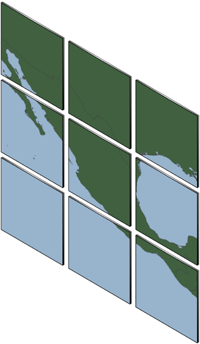Mapnik 提供了一个有用的函数，可以从单个地图生成像这样的小瓦片:
def render_tile_to_file(map, xOffset, yOffset, width, height,
fileName, format)
该函数的参数如下：
map 是包含地图数据的 mapnik.Map 对象
xOffset 和 yOffset 定义了瓦片的左上角坐标（以地图坐标为单位）
width 和 height 定义了瓦片的大小（以地图坐标为单位）
fileName 是保存瓦片图像的文件名
format 是用于保存此瓦片的文件格式
你可以通过反复调用此函数来为地图生成各个瓦片。例如:
for x in range(NUM_TILES_ACROSS):
for y in range(NUM_TILES_DOWN):
xOffset = TILE_SIZE * x
yOffset = TILE_SIZE * y
tileName = "tile_%d_%d.png" % (x, y)
mapnik.render_tile_to_file(map, xOffset, yOffset,
TILE_SIZE, TILE_SIZE,
tileName, "png")
另一种渲染地图的方式是使用 Mapnik.Image 对象将渲染后的地图数据保存在内存中。你可以通过如下方式提取 Image 对象中的原始图像数据:
image = mapnik.Image(MAP_WIDTH, MAP_HEIGHT)
mapnik.render(map, image)
imageData = image.tostring('png')
After creating your mapnik.Map object and setting up the various symbolizers, rules, styles, data sources, and layers within it, you are finally ready to convert your map into a rendered image.
Before rendering the map image, make sure that you have set the appropriate bounding box for the map so that the map will show the area of the world you are interested in. You can do this by either calling map.zoom_to_box() to explicitly set the map’s bounding box to a given set of coordinates, or you can call map. zoom_all() to have the map automatically set its bounds based on the data to be displayed.
Once you have set the bounding box, you can generate your map image by calling the render_to_file() function, like this:
mapnik.render_to_file(map, 'map.png')
The parameters are the mapnik.Map object and the name of the image file to write the map to. If you want more control over the format of the image, you can add an extra parameter, which defines the image format, like this:
mapnik.render_to_file(map, 'map.png', 'png256')
The supported image formats include the following:
Image format |
Description |
|---|---|
png |
A 32-bit PNG format image |
png256 |
An 8-bit PNG format image |
jpeg |
A JPEG-format image |
svc |
An SVG-format image |
A PDF file |
|
ps |
A postscript format file |
The render_to_file() function works well when you want to generate a single image from your entire map. Another useful way of rendering maps is to generate a number of “tiles” which can then be stitched together to display the map at a higher resolution:
Mapnik provides a helpful function for creating tiles like this out of a single map:
def render_tile_to_file(map, xOffset, yOffset, width, height,
fileName, format)
The parameters to this function are as follows:
map is the mapnik.Map object containing the map data
xOffset and yOffset define the top-left corner of the tile, in map coordinates
width and height define the size of the tile, in map coordinates
fileName is the name of the file to save the tiled image into
format is the file format to use for saving this tile
You can simply call this function repeatedly to create the individual tiles for your map. For example:
for x in range(NUM_TILES_ACROSS):
for y in range(NUM_TILES_DOWN):
xOffset = TILE_SIZE * x
yOffset = TILE_SIZE * y
tileName = "tile_%d_%d.png" % (x, y)
mapnik.render_tile_to_file(map, xOffset, yOffset,
TILE_SIZE, TILE_SIZE,
tileName, "png")
Another way of rendering a map is to use a Mapnik.Image object to hold the rendered map data in memory. You can then extract the raw image data from the Image object, like this:
image = mapnik.Image(MAP_WIDTH, MAP_HEIGHT)
mapnik.render(map, image)
imageData = image.tostring('png')